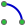
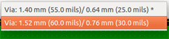

Manuale di riferimento
Copyright
Questo documento è coperto dal Copyright © 2010–2015 dei suoi autori come elencati in seguito. È possibile distribuirlo e/o modificarlo nei termini sia della GNU General Public License (http://www.gnu.org/licenses/gpl.html), versione 3 o successive, che della Creative Commons Attribution License (http://creativecommons.org/licenses/by/3.0/), versione 3.0 o successive.
Tutti i marchi registrati all’interno di questa guida appartengono ai loro legittimi proprietari.
Collaboratori
Jean-Pierre Charras, Fabrizio Tappero.
Traduzione
Marco Ciampa <ciampix@libero.it>, 2014-2015.
Feedback
Si prega di inviare qualsiasi rapporto bug, suggerimento o nuova versione a:
-
Documentazione di KiCad: https://github.com/KiCad/kicad-doc/issues
-
Software KiCad: https://bugs.launchpad.net/kicad
-
Traduzione di KiCad: https://github.com/KiCad/kicad-i18n/issues
Data di pubblicazione e versione del software
17 marzo 2014.
1. Introduzione a Pcbnew
1.1. Descrizione
Pcbnew è un potente strumento software per lo sviluppo di circuiti stampati disponibile per i sistemi operativi Linux, Microsoft Windows e Apple OS X. Pcbnew viene usato assieme al programma di disegno schemi elettrici Eeschema per la creazione di circuiti stampati.
Pcbnew gestisce le librerie di impronte. Ogni impronta è un disegno del componente fisico - la disposizione delle piazzole che forniscono le connessioni al componente. Le impronte richieste vengono automaticamente caricate durante la lettura della Netlist. Qualsiasi cambiamento nella selezione delle impronte o annotazione può essere cambiato nello schema e aggiornato in pcbnew rigenerando la netlist e ricaricandola nuovamente in pcbnew.
Pcbnew fornisce uno strumento per il controllo delle regole elettriche (Design Rule Check o DRC) che previene i problemi di distanziamento tra piste e piazzole e previene anche le connessioni errate che non hanno corrispondenza nella netlist/schema elettrico. Quando si usa lo sbroglio interattivo, questo esegue in continuazione questo controllo aiutando lo sbroglio delle singole piste.
Pcbnew fornisce una visualizzazione a ratnest, una ragnatela delle connessioni delle piazzole delle impronte connesse sullo schema elettrico. Queste connessioni si spostano dinamicamente seguendo gli spostamenti effettuati di tracce e impronte.
Pcbnew possiede un semplice ma efficace sbrogliatore per assistere nella produzione del circuito. Una funzione di esportazione/importazione in formato dsn SPECCTRA permette inoltre l’uso di sbrogliatori più avanzati.
Pcbnew fornisce opzioni specifiche per la produzione di circuiti ad ultra alta frequenza (come piazzole trapezoidali e di forme complesse, disposizione automatica di bobine sul circuito stampato, ecc.).
1.2. Caratteristiche principali di progettazione
L’unità più piccola in pcbnew è 1 nanometro. Tutte le dimensioni sono memorizzate come integer di nanometri.
Pcbnew può generare fino a 32 strati rame, 14 strati tecnici (serigrafia, maschera di saldatura, adesivo componenti, pasta salda, bordi di taglio) più 4 ausiliari (disegni e commenti) e gestisce in tempo reale l’indicazione della ragnatela di connessioni (rats nest) delle tracce mancanti.
La visualizzazione degli elementi del circuito stampato (tracce, piazzole, testo, disegni…) è personalizzabile:
-
in modalità piena o solo contorno;
-
con o senza isolamento delle tracce.
Per i circuiti complessi, la visualizzazione degli strati, zone, componenti può essere nascosta in maniera selettiva per una migliore chiarezza sullo schermo. I collegamenti delle piste possono essere evidenziati per migliorarne il contrasto.
Le impronte possono essere ruotate di qualsiasi angolo, con una risoluzione di 0.1 grado.
Pcbnew include un editor di impronte che permette la modifica delle singole impronte posta su un circuito stampato o la modifica che quelle presenti in una libreria.
L’editor impronte è fornito di molti strumenti che fanno risparmiare tempo come:
-
Numerazione piazzole veloce, semplicemente trascinando il mouse sopra le piazzole che si vuole numerare.
-
Semplice generazione multipla di piazzole circolari o rettangolari per LGA/BGA o impronte circolari.
-
Allineamento semi-automatico di righe o colonne di piazzole.
Le piazzole delle impronte hanno una serie di proprietà che possono essere regolate. Le piazzole possono essere tonde, rettangolari, ovali o trapezoidali. Le forature dei componenti passanti possono essere spostate nella piazzola e possono essere tonde o a fessura. Le singole piazzole possono anche essere ruotate ed avere particolari spaziature per le maschere di saldatura, per l’isolamento dei collegamenti o per la pasta salda. Le piazzole possono anche avere una connessione piena o una connessione a basso trasferimento termico per migliorare la manifattura del circuito stampato. Qualsiasi combinazione anche univoca di piazzole può essere inserita in un’impronta.
Pcbnew genera facilmente tutti i documenti necessari per la produzione:
-
Prodotti per la fabbricazione:
-
File per fotoplotter in formato GERBER RS274X.
-
File per la foratura in formato EXCELLON.
-
-
Stampa di file in formato HPGL, SVG o DXF.
-
Mappe di disegno e forature in formato Postscript.
-
Stampe locali.
1.3. Osservazioni generali
A causa del livello di controllo necessario, è fortemente raccomandato l’uso di mouse a tre tasti con pcbnew. Funzioni primarie come il pan e lo zoom necessitano di un mouse a tre tasti.
Nella nuova versione di KiCad, in pcbnew sono stati introdotti cambiamenti radicali da parte di sviluppatori del CERN. Questi includono caratteristiche come un nuovo motore di render (modalità di visualizzazione OpenGL e Cairo), uno sbrogliatore interattivo "push and shove", sbroglio e accordamento di piste differenziali e a zig-zag, un editor di impronte revisionato, e molte altre ancora. Si noti che molte di queste caratteristiche esistono solo nelle nuove modalità di visualizzazione OpenGL e Cairo.
2. Installazione
2.1. Installazione del software
La procedura di installazione è descritta nella documentazione di KiCad.
2.2. Modifica della configurazione predefinita
A default configuration file kicad.pro is provided in kicad/share/template. This file is used as the initial configuration for all new projects.
This configuration file can be modified to change the libraries to be loaded.
To do this:
-
Launch Pcbnew using kicad or directly. On Windows it is in C:\kicad\bin\pcbnew.exe and on Linux you can run /usr/local/kicad/bin/kicad or /usr/local/kicad/bin/pcbnew if the binaries are located in /usr/local/kicad/bin.
-
Select Preferences - Libs and Dir.
-
Edit as required.
-
Save the modified configuration (Save Cfg) to kicad/share/template/kicad.pro.
2.3. Managing Footprint Libraries: legacy versions
You can have access to the library list initialization from the Preferences menu:

The image below shows the dialog which allows you to set the footprint library list:

You can use this to add all the libraries that contain the footprints required for your project. You should also remove unused libraries from new projects to prevent footprint name clashes. Please note, there is an issue with the footprint library list when duplicate footprint names exist in more than one library. When this occurs, the footprint will be loaded from the first library found in the list. If this is an issue (you cannot load the footprint you want), either change the library list order using the "Up" and "Down" buttons in the dialog above or give the footprint a unique name using the footprint editor.
2.4. Managing Footprint Libraries: .pretty repositories
A partire dalla release 4.0, Pcbnew utilizza la nuova implementazione a tabella per la gestione delle librerie di impronte. Le informazioni nella sezione precedente non solo più valide. Il gestore della tabella delle librerie è accessibile da:

L’immagine sottostante mostra la finestra di dialogo di modifica della tabella delle librerie di impronte che può essere aperta invocando la voce "Manager librerie di impronte" dal menu delle "Preferenze".

La tabella librerie di impronte viene usata per mappare una libreria di impronte di qualsiasi tipo supportato ad una denominazione di libreria. Questa denominazione viene usata per cercare le impronte in alternativa al precedente metodo che dipendeva dall’ordine di ricerca dei percorsi. Ciò permette a Pcbnew di accedere alle impronte con lo stesso nome in diverse librerie assicurando che venga caricata la corretta impronta dalla libreria appropriata. Inoltre ciò permette di supportare il caricamento di librerie provenienti da editor di circuiti stampati alternativi come Eagle e gEDA.
2.4.1. Tabella librerie impronte globale
La tabella librerie impronte globale contiene l’elenco delle librerie che sono sempre disponibili indipendentemente dal file progetto attualmente caricato. La tabella viene salvata nel file fp-lib-table nella cartella utente. La posizione di questa cartella dipende dal sistema operativo.
2.4.2. Tabella librerie di impronte specifica del progetto
La tabella delle librerie di impronte specifica del progetto contiene l’elenco delle librerie che sono disponibili specificatamente per il file di progetto attualmente caricato. Questa tabella può essere modificata solo quando viene caricata assieme al file di progetto della scheda. Se non viene caricato un file di progetto o non c'è il file della tabella delle librerie di impronte nel percorso del progetto, viene creata una tabella vuota che può essere modificata ed in seguito salvata assieme al file della scheda.
2.4.3. Configurazione iniziale
La prima volta che CvPcb o Pcbnew vengono eseguiti e il file della tabella globale delle impronte fp-lib-table non viene trovato nella cartella home dell’utente, Pcbnew cercherà di copiare il file della tabella delle impronte predefinito fp_global_table memorizzato nella cartella di sistema dei modelli di KiCad sul file fp-lib-table nella cartella home dell’utente. Se fp_global_table non si trova, verrà creato un file di tabella librerie di impronte vuoto nella cartella home dell’utente. Se si verifica quest’ultima azione, l’utente può sia copiare il file fp_global_table manualmente o configurare la tabella a mano. La tabella librerie di impronte predefinita include tutte le librerie di impronte standard che vengono installate come parte di KiCad.
2.4.4. Aggiunta voci di tabella
In order to use a footprint library, it must first be added to either the global table or the project specific table. The project specific table is only applicable when a board file is open. Each library entry must have a unique nickname. This does not have to be related in any way to the actual library file name or path. The colon : character cannot be used anywhere in the nickname. Each library entry must have a valid path and/or file name depending on the type of library. Paths can be defined as absolute, relative, or by environment variable substitution. The appropriate plug in type must be selected in order for the library to be properly read. Pcbnew currently supports reading KiCad legacy, KiCad Pretty, Eagle, and gEDA footprint libraries. There is also a description field to add a description of the library entry. The option field is not used at this time so adding options will have no effect when loading libraries. Please note that you cannot have duplicate library nicknames in the same table. However, you can have duplicate library nicknames in both the global and project specific footprint library table. The project specific table entry will take precedence over the global table entry when duplicated names occur. When entries are defined in the project specific table, an fp-lib-table file containing the entries will be written into the folder of the currently open netlist.
2.4.5. Environment Variable Substitution
One of the most powerful features of the footprint library table is environment variable substitution. This allows you to define custom paths to where your libraries are stored in environment variables. Environment variable substitution is supported by using the syntax ${ENV_VAR_NAME} in the footprint library path. By default, at run time Pcbnew defines the $KISYSMOD environment variable. This points to where the default footprint libraries that were installed with KiCad are located. You can override $KISYSMOD by defining it yourself which allows you to substitute your own libraries in place of the default KiCad footprint libraries. When a board file is loaded, Pcbnew also defines the $KPRJMOD using the board file path. This allows you to create libraries in the project path without having to define the absolute path to the library in the project specific footprint library table.
2.4.6. Using the GitHub Plugin
The GitHub plugin is a special plugin that provides an interface for read-only access to a remote GitHub repository consisting of pretty (Pretty is name of the KiCad footprint file format) footprints and optionally provides "Copy-On-Write" (COW) support for editing footprints read from the GitHub repo and saving them locally. Therefore the "GitHub" plugin is for read-only for accessing remote pretty footprint libraries at https://github.com. To add a GitHub entry to the footprint library table the "Library Path" in the footprint library table entry must be set to a valid GitHub URL.
For example:
https://github.com/liftoff-sr/pretty_footprints
Typically GitHub URLs take the form:
https://github.com/user_name/repo_name
The "Plugin Type" must be set to "Github". To enable the "Copy-On-Write" feature the option allow_pretty_writing_to_this_dir must be added to the "Options" setting of the footprint library table entry. This option is the "Library Path" for local storage of modified copies of footprints read from the GitHub repo. The footprints saved to this path are combined with the read-only part of the GitHub repository to create the footprint library. If this option is missing, then the GitHub library is read-only. If the option is present for a GitHub library, then any writes to this hybrid library will go to the local *.pretty directory. Note that the github.com resident portion of this hybrid COW library is always read-only, meaning you cannot delete anything or modify any footprint in the specified GitHub repository directly. The aggregate library type remains "Github" in all further discussions, but it consists of both the local read/write portion and the remote read-only portion.
The table below shows a footprint library table entry without the option allow_pretty_writing_to_this_dir:
| Nickname | Library Path | Plugin Type | Options | Description |
|---|---|---|---|---|
github |
Github |
Liftoff’s GH footprints |
The table below shows a footprint library table entry with the COW option given. Note the use of the environment variable ${HOME} as an example only. The github.pretty directory is located in ${HOME}/pretty/path. Anytime you use the option allow_pretty_writing_to_this_dir, you will need to create that directory manually in advance and it must end with the extension .pretty.
| Nickname | Library Path | Plugin Type | Options | Description |
|---|---|---|---|---|
github |
Github |
Liftoff’s GH footprints |
Footprint loads will always give precedence to the local footprints found in the path given by the option allow_pretty_writing_to_this_dir. Once you have saved a footprint to the COW library’s local directory by doing a footprint save in the Footprint Editor, no GitHub updates will be seen when loading a footprint with the same name as one for which you’ve saved locally.
Always keep a separate local *.pretty directory for each GitHub library, never combine them by referring to the same directory more than once. Also, do not use the same COW (*.pretty) directory in a footprint library table entry. This would likely create a mess. The value of the option allow_pretty_writing_to_this_dir will expand any environment variable using the ${} notation to create the path in the same way as the "Library Path" setting.
What’s the point of COW? It is to turbo-charge the sharing of footprints. If you periodically email your COW pretty footprint modifications to the GitHub repository maintainer, you can help update the GitHub copy. Simply email the individual *.kicad_mod files you find in your COW directories to the maintainer of the GitHub repository. After you’ve received confirmation that your changes have been committed, you can safely delete your COW file(s) and the updated footprint from the read-only part of GitHub library will flow down. Your goal should be to keep the COW file set as small as possible by contributing frequently to the shared master copies at https://github.com.
Finally, Nginx can be used as a cache to the github server to speed up the loading of footprints. It can be installed locally or on a network server. There is an example configuration in KiCad sources at pcbnew/github/nginx.conf. The most straightforward way to get this working is to overwrite the default nginx.conf with this one and export KIGITHUB=http://my_server:54321/KiCad, where my_server is the IP or domain name of the machine running nginx.
2.4.7. Usage Patterns
Footprint libraries can be defined either globally or specifically to the currently loaded project. Footprint libraries defined in the user’s global table are always available and are stored in the fp-lib-table file in the user’s home folder. Global footprint libraries can always be accessed even when there is no project net list file opened. The project specific footprint table is active only for the currently open net list file. The project specific footprint library table is saved in the file fp-lib-table in the path of the currently open board file. You are free to define libraries in either table.
There are advantages and disadvantages to each method:
-
You can define all of your libraries in the global table which means they will always be available when you need them.
-
The disadvantage of this is that you may have to search through a lot of libraries to find the footprint you are looking for.
-
-
You can define all your libraries on a project specific basis.
-
The advantage of this is that you only need to define the libraries you actually need for the project which cuts down on searching.
-
The disadvantage is that you always have to remember to add each footprint library that you need for every project.
-
-
You can also define footprint libraries both globally and project specifically.
One usage pattern would be to define your most commonly used libraries globally and the library only required for the project in the project specific library table. There is no restriction on how you define your libraries.
3. General operations
3.1. Toolbars and commands
In Pcbnew it is possible to execute commands using various means:
-
Text-based menu at the top of the main window.
-
Top toolbar menu.
-
Right toolbar menu.
-
Left toolbar menu.
-
Mouse buttons (menu options). Specifically:
-
The right mouse button reveals a pop-up menu the content of which depends on the element under the mouse arrow.
-
-
Keyboard (Function keys F1, F2, F3, F4, Shift, Delete, +, -, Page Up, Page Down and Space bar). The Escape key generally cancels an operation in progress.
The screenshot below illustrates some of the possible accesses to these operations:

3.2. Mouse commands
3.2.1. Basic commands
-
Left button
-
Single-click displays the characteristics of the footprint or text under the cursor in the lower status bar.
-
Double-click displays the editor (if the element is editable) of the element under the cursor.
-
-
Centre button/wheel
-
Rapid zoom and some commands in layer manager.
-
Hold down the centre button and draw a rectangle to zoom to the described area. Rotation of the mouse wheel will allow you to zoom in and zoom out.
-
-
Right button
-
Displays a pop-up menu
-
3.2.2. Operations on blocks
Operations to move, invert (mirror), copy, rotate and delete a block are all available via the pop-up menu. In addition, the view can zoom to the area described by the block.
The framework of the block is traced by moving the mouse while holding down the left mouse button. The operation is executed when the button is released.
By holding down one of the hotkeys Shift or Ctrl, or both keys Shift and Ctrl together, while the block is drawn the operation invert, rotate or delete is automatically selected as shown in the table below:
| Action | Effect |
|---|---|
Left mouse button held down |
Trace framework to move block |
Shift + Left mouse button held down |
Trace framework for invert block |
Ctrl + Left mouse button held down |
Trace framework for rotating block 90° |
Shift + Ctrl + Left mouse button held down |
Trace framework to delete the block |
Centre mouse button held down |
Trace framework to zoom to block |
When moving a block:
-
Move block to new position and operate left mouse button to place the elements.
-
To cancel the operation use the right mouse button and select Cancel Block from the menu (or press the Esc key).
Alternatively if no key is pressed when drawing the block use the right mouse button to display the pop-up menu and select the required operation.
For each block operation a selection window enables the action to be limited to only some elements.
3.3. Selection of grid size
During element layout the cursor moves on a grid. The grid can be turned on or off using the icon on the left toolbar.
Any of the pre-defined grid sizes, or a User Defined grid, can be chosen using the pop-up window, or the drop-down selector on the toolbar at the top of the screen. The size of the User Defined grid is set using the menu bar option Dimensions → User Grid Size.
3.4. Adjustment of the zoom level
The zoom level can be changed using any of the following methods:
-
Open the pop-up window (using the right mouse button) and then select the desired zoom.
-
Use the following function keys:
-
F1: Enlarge (zoom in)
-
F2: Reduce (zoom out)
-
F3: Redraw the display
-
F4: Centre view at the current cursor position
-
-
Rotate the mouse wheel.
-
Hold down the middle mouse button and draw a rectangle to zoom to the described area.
3.5. Displaying cursor coordinates
The cursor coordinates are displayed in inches or millimetres as selected using the In or mm icons on the left hand side toolbar.
Whichever unit is selected Pcbnew always works to a precision of 1/10,000 of inch.
The status bar at the bottom of the screen gives:
-
The current zoom setting.
-
The absolute position of the cursor.
-
The relative position of the cursor. Note the relative coordinates (x,y) can be set to (0,0) at any position by pressing the space bar. The cursor position is then displayed relative to this new datum.
In addition the relative position of the cursor can be displayed using its polar co-ordinates (ray + angle). This can be turned on and off using the icon in the left hand side toolbar.
3.6. Keyboard commands - hotkeys
Many commands are accessible directly with the keyboard. Selection can be either upper or lower case. Most hot keys are shown in menus. Some hot keys that do not appear are:
-
Delete: deletes a footprint or a track. (Available only if the Footprint mode or the Track mode is active)
-
V: if the track tool is active switches working layer or place via, if a track is in progress.
-
+ and -: select next or previous layer.
-
?: display the list of all hot keys.
-
Space: reset relative coordinates.
3.7. Operation on blocks
Operations to move, invert (mirror), copy, rotate and delete a block are all available from the pop-up menu. In addition, the view can zoom to that described by the block.
The framework of the block is traced by moving the mouse while holding down the left mouse button. The operation is executed when the button is released.
By holding down one of the keys Shift or Ctrl, both Shift and Ctrl together, or Alt, while the block is drawn the operation invert, rotate, delete or copy is automatically selected as shown in the table below:
| Action | Effect |
|---|---|
Left mouse button held down |
Move block |
Shift + Left mouse button held down |
Invert (mirror) block |
Ctrl + Left mouse button held down |
Rotate block 90° |
Shift + Ctrl + Left mouse button held down |
Delete the block |
Alt + Left mouse button held down |
Copy the block |
When a block command is made, a dialog window is displayed, and items involved in this command can be chosen.
Any of the commands above can be cancelled via the same pop-up menu or by pressing the Escape key (Esc).

3.8. Units used in dialogs
Units used to display dimensions values are inch and mm. The desired unit
can be selected by pressing the icon located in left toolbar:

 However
one can enter the unit used to define a value, when entering a new value.
However
one can enter the unit used to define a value, when entering a new value.
Accepted units are:
1 in |
1 inch |
1 " |
1 inch |
25 th |
25 thou |
25 mi |
25 mils, same as thou |
6 mm |
6 mm |
The rules are:
-
Spaces between the number and the unit are accepted.
-
Only the first two letters are significant.
-
In countries using an alternative decimal separator than the period, the period (.) can be used as well. Therefore 1,5 and 1.5 are the same in French.
3.9. Top menu bar
The top menu bar provides access to the files (loading and saving), configuration options, printing, plotting and the help files.

3.9.1. The File menu

The File menu allows the loading and saving of printed circuits files, as well as printing and plotting the circuit board. It enables the export (with the format GenCAD 1.4) of the circuit for use with automatic testers.
3.9.2. Edit menu
Allows some global edit actions:
3.9.3. View menu
Zoom functions and 3D board display.
3D Viewer
Opens the 3D Viewer. Here is a sample:

Switch canvas
Allows switching canvas.
-
default
-
OpenGL
-
Cairo
3.9.4. Place menu
Same function as the right-hand toolbar.

3.9.5. Route menu
Routing function.

3.9.6. Il menu delle preferenze
Allows:
-
Selection of the footprint libraries.
-
Hide/Show the Layers manager (colors selection for displaying layers and other elements. Also enables the display of elements to be turned on and off).
-
Management of general options (units, etc.).
-
The management of other display options.
-
Creation, editing (and re-read) of the hot keys file.
3.9.7. Menu dimensioni
An important menu. Allows adjustment of:
-
User grid size.
-
Size of texts and the line width for drawings.
-
Dimensions and characteristic of pads.
-
Setting the global values for solder mask and solder paste layers
3.9.8. Tools menu

3.9.9. The Design Rules menu

Provides access to 2 dialogs:
-
Impostazione regole di progettazione (dimensioni piste e via, isolamenti).
-
Setting Layers (number, enabled and layers names)
3.9.10. Il menu di aiuto
Provides access to the user manuals and to the version information menu (Pcbnew About).
3.10. Uso delle icone nella barra in cima
This toolbar gives access to the principal functions of Pcbnew.

|
Creation of a new printed circuit. |
|
Opening of an old printed circuit. |
|
Save printed circuit. |
|
Selection of the page size and modification of the file properties. |
|
Opens Footprint Editor to edit library or pcb footprint. |
|
Opens Footprint Viewer to display library or pcb footprint. |
|
Undo/Redo last commands (10 levels) |
|
Display print menu. |
|
Display plot menu. |
|
Zoom in and Zoom out (relative to the centre of screen). |
|
Redraw the screen |
|
Fit to page |
|
Find footprint or text. |
|
Netlist operations (selection, reading, testing and compiling). |
|
DRC (Design Rule Check): Automatic check of the tracks. |
|
Selection of the working layer. |
|
Selection of layer pair (for vias) |
|
Footprint mode: when active this enables footprint options in the pop-up window. |
|
Routing mode: when active this enables routing options in the pop-up window |
|
Direct access to the router Freerouter |
|
Show / Hide the Python scripting console |


3.10.1. Auxiliary toolbar
|
Selection of thickness of track already in use. |
|
Selection of a dimension of via already in use. |
|
Automatic track width: if enabled when creating a new track, when starting on an existing track, the width of the new track is set to the width of the existing track. |
|
Selection of the grid size. |
|
Selection of the zoom. |


3.11. Right-hand side toolbar
This toolbar gives access to the editing tool to change the PCB shown in Pcbnew.
|
|
Select the standard mouse mode. |
|
Highlight net selected by clicking on a track or pad. |
|
|
Display local ratsnest (Pad or Footprint). |
|
|
Add a footprint from a library. |
|
|
Placement of tracks and vias. |
|
|
Placement of zones (copper planes). |
|
|
Placement of keepout areas ( on copper layers ). |
|
|
Draw Lines on technical layers (i.e. not a copper layer). |
|
|
Draw Circles on technical layers (i.e. not a copper layer). |
|
 |
Draw Arcs on technical layers (i.e. not a copper layer). |
|
|
Placement of text. |
|
|
Draw Dimensions on technical layers (i.e. not the copper layer). |
|
|
Draw Alignment Marks (appearing on all layers). |
|
|
Delete element pointed to by the cursor Note: When Deleting, if several superimposed elements are pointed to, priority is given to the smallest (in the decreasing set of priorities tracks, text, footprint). The function "Undelete" of the upper toolbar allows the cancellation of the last item deleted. |
|
|
Offset adjust for drilling and place files. |
|
|
Grid origin. (grid offset). Useful mainly for editing and placement of footprints. Can also be set in Dimensions/Grid menu. |

-
Placement of footprints, tracks, zones of copper, texts, etc.
-
Net Highlighting.
-
Creating notes, graphic elements, etc.
-
Eliminare elementi.
3.12. Left-hand side toolbar
The left hand-side toolbar provides display and control options that affect Pcbnew’s interface.
|
|
Turns DRC (Design Rule Checking) on/off. Caution: when DRC is off incorrect connections can be made. |
|
Turn grid display on/off Note: a small grid may not be displayed unless zoomed in far enough |
|
|
Polar display of the relative co-ordinates on the status bar on/off. |
|
|
Display/entry of coordinates or dimensions in inches or millimeters. |
|
|
Change cursor display shape. |
|
|
Display general rats nest (incomplete connections between footprints). |
|
|
Display footprint rats nest dynamically as it is moved. |
|
|
Enable/Disable automatic deletion of a track when it is redrawn. |
|
|
Show filled areas in zones |
|
|
Do not show filled areas in zones |
|
|
Show only outlines of filled areas in zones |
|
|
Display of pads in outline mode on/off. |
|
|
Display of vias in outline mode on/off. |
|
|
Display of tracks in outline mode on/off. |
|
|
High contrast display mode on/off. In this mode the active layer is displayed normally, all the other layers are displayed in gray. Useful for working on multi-layer circuits. |
|
|
Hide/Show the Layers manager |
|
|
Access to microwaves tools. Under development |

3.13. Pop-up windows and fast editing
A right-click of the mouse opens a pop-up window. Its contents depends on the element pointed at by the cursor.
This gives immediate access to:
-
Changing the display (centre display on cursor, zoom in or out or selecting the zoom).
-
Setting the grid size.
-
Additionally a right-click on an element enables editing of the most commonly modified element parameters.
The screenshots below show what the pop-up windows looks like.
3.14. Available modes
There are 3 modes when using pop-up menus. In the pop-up menus, these modes add or remove some specific commands.
|
Normal mode |
|
Footprint mode |
|
Tracks mode |
3.14.1. Normal mode
-
Pop-up menu with no selection:
-
Pop-up menu with track selected:
-
Pop-up menu with footprint selected:

3.14.2. Footprint mode
Same cases in Footprint Mode (
 enabled)
enabled)
-
Pop-up menu with no selection:
-
Pop-up menu with track selected:
-
Pop-up menu with footprint selected:

3.14.3. Tracks mode
Same cases in Track Mode (
 enabled)
enabled)
-
Pop-up menu with no selection:

-
Pop-up menu with track selected:

-
Pop-up menu with footprint selected:

4. Implementazione schemi
4.1. Collegamento di uno schema ad un circuito stampato
In generale, uno schema elettrico è connesso con il suo circuito stampato per mezzo del file di netlist, che normalmente viene generato dall’editor degli schemi elettrici usato per creare lo schema. Pcbnew accetta file di netlist creati con Eeschema o Orcad PCB 2. Al file di netlist, generato dall’editor degli schemi elettrici, solitamente mancano le impronte che corrispondono ai vari componenti. Di conseguenza si rende necessario uno stadio intermedio. Durante questo processo intermedio viene eseguita l’associazione tra componenti e impronte. In KiCad, si usa il programma CvPcb per creare questa associazione e viene prodotto un file di nome *.cmp. CvPcb aggiorna anche il file di netlist usando queste informazioni.
CvPcb può anche generare un “file di cose” *.stf che possono essere back-annotate nel file dello schema elettrico come il campo F2 per ogni componente, risparmiandoci il compito di ri-assegnare le impronte in ogni passaggio di modifica dello schema elettrico. In Eeschema la copia di un componente copierà anche l’assegnazione dell’impronta e reimposterà il riferimento come non assegnato per la successiva annotazione auto incrementale.
Pcbnew legge il file di netlist modificato .net e, se esiste, il file .cmp. Nell’eventualità che una impronta sia stata cambiata direttamente in Pcbnew il file .cmp viene automaticamente aggiornato evitando la necessità di eseguire nuovamente CvPcb.
Fare riferimento alla immagine del manuale “Introduzione a KiCad” nella sezione Diagramma di flusso di KiCad che illustra il flusso di lavoro di KiCad e come i file intermedi vengano ottenuti e usati dai diversi strumenti software che compongono KiCad.
4.2. Procedura per la creazione di un circuito stampato
Dopo aver creato il prorio schema in Eeschema:
-
Generare la netlist usando Eeschema.
-
Assegnare ogni componente nel file di netlist alla forma sul circuito stampato (detta anche impronta) corrispondente usata sul circuito stampato usando Cvpcb.
-
Avviare Pcbnew e leggere il file di netlist modificato. Ciò leggerà anche il file con le selezioni delle impronte.
Pcbnew quindi caricherà automaticamente tutte le impronte necessarie. Ora le impronte possono essere piazzate manualmente o automaticamente sulla scheda e si possono collegare le piste.
4.3. Procedura per aggiornare un circuito stampato
Se lo schema elettrico viene modificato (dopo la produzione del circuito stampato), si devono ripetere i seguenti passi:
-
Generare un nuovo file di netlist usando Eeschema.
-
Se i cambiamenti allo schema comprendono nuovi componenti, le impronte corrispondenti devono essere assegnate usando Cvpcb.
-
Eseguire Pcbnew e rileggere la netlist modificata (ciò comporterà anche la rilettura del file con le selezioni delle impronte).
Pcbnew allora caricherà automaticamente ogni nuova impronta, aggiungendo le nuove connessioni e rimuovendo quelle ridondanti. Questo processo viene chiamato forward annotation ed è una procedura molto comune quando si crea ed aggiorna un circuito stampato.
4.4. Lettura del file netlist - caricamento impronte
4.4.1. Finestra di dialogo
Accessibile dall’icona

4.4.2. Opzioni disponibili
Selezione impronte |
Componenti e collegamento impronte corrispondenti sulla scheda: il collegamento normale è il riferimento (come opzione normale la marcatura temporale può essere usata dopo la riannotazione dello schema, se l’annotazione precedente era andata persa (opzione speciale) |
Scambio impronte: |
Se un’impronta è cambiata nella netlist: mantieni la vecchia impronta o cambia con la nuova versione. |
Piste non connesse |
Mantiene tutte le piste esistenti, o cancella le piste errate |
Impronte extra |
Rimuovi le impronte presenti sulla scheda ma non nella netlist. Le impronte con attributo "Bloccata" non saranno rimosse. |
Collegamenti a piazzola singola |
Rimuovi i collegamenti a singola piazzole. |
4.4.3. Caricamento nuove impronte
Con la visualizzazione GAL quando nuove impronte vengono rilevate nel file netlist, queste vengono caricate, sparse, e rese disponibili per il piazzamento come grupo dove si desidera.

Con la visualizzazione tradizionale quando le nuove impronte vengono rilevate nel file netlist, queste vengono automaticamente caricate e piazzate alle coordinate (0,0).

Le nuove impronte possono essere spostate e sistemate una ad una. Un modo migliore per spostarle automaticamente è:
Attivazione della modalità impronta (
 )
)
Spostare il puntatore del mouse in un’area consona (libera da componenti) e fare clic con il tasto destro del mouse:
-
Posiziona automaticamente le nuove impronte, se c'è già una scheda con impronte preesistenti.
-
Posiziona automaticamente tutte le impronte, per la prima volta (quando si crea una scheda).
La schermata seguente mostra i risultati.
5. Strati
5.1. Introduzione
Pcbnew può lavorare con 50 strati diversi:
-
Tra 1 e 32 strati rame per lo sbroglio piste.
-
14 strati tecnici di funzione prefissata:
-
12 strati appaiati (fronte/retro): Adhesive, Solder Paste, Silk Screen, Solder Mask, Courtyard, Fabrication
-
2 strati singoli: Edge Cuts, Margin
-
-
4 strati ausiliari che si può usare a piacimento: Comments, E.C.O. 1, E.C.O. 2, Drawings
5.2. Impostazione degli strati
To open the Layers Setup from the menu bar, select Design Rules → Layers Setup.
Il numero di strati rame, i loro nomi e le loro funzioni, vengono impostati in questa sede. Gli strati tecnici non usati possono essere disabilitati.
5.3. Descrizione strati
5.3.1. Selezione degli strati rame
Copper layers are the usual working layers used to place and re-arrange tracks. Layer numbers start from 0 (the first copper layer, on Front) and end at 31 (Back). Since components cannot be placed in inner layers (number 1 to 30), only layers number 0 and 31 are component layer.
The name of any copper layer is editable. Copper layers have a function attribute that is useful when using the external router Freerouter. Example of default layer names are F.Cu and In0 for layer number 0.

5.3.2. Paired Technical Layers
12 technical layers come in pairs: one for the front, one for the back. You can recognize them with the "F." or "B." prefix in their names. The elements making up a footprint (pad, drawing, text) of one of these layers are automatically mirrored and moved to the complementary layer when the footprint is flipped.
The paired technical layers are:
- Adhesive (F.Adhes and B.Adhes)
-
These are used in the application of adhesive to stick SMD components to the circuit board, generally before wave soldering.
- Solder Paste (F.Paste and B.Paste)
-
Used to produce a mask to allow solder paste to be placed on the pads of surface mount components, generally before reflow soldering. Usually only surface mount pads occupy these layers.
- Silk Screen (F.SilkS and B.SilkS)
-
They are the layers where the drawings of the components appear. That’s where you draw things like component polarity, first pin indicator, reference for mounting, …
- Solder Mask (F.Mask and B.Mask)
-
These define the solder masks. All pads should appear on one of these layers (SMT) or both (for through hole) to prevent the varnish from covering the pads.
- Courtyard (F.CrtYd and B.CrtYd)
-
Used to show how much space a component physically takes on the PCB.
- Fabrication (F.Fab and B.Fab)
-
Footprint assembly (?).
5.3.3. Independant Technical Layers
- Edge.Cuts
-
This layer is reserved for the drawing of circuit board outline. Any element (graphic, texts…) placed on this layer appears on all the other layers. Use this layer only to draw board outlines.
- Margin
-
Board’s edge setback outline (?).
5.3.4. Layers for general use
These layers are for any use. They can be used for text such as instructions for assembly or wiring, or construction drawings, to be used to create a file for assembly or machining. Their names are:
-
Comments
-
E.C.O. 1
-
E.C.O. 2
-
Drawings
5.4. Selection of the active layer
The selection of the active working layer can be done in several ways:
-
Using the right toolbar (Layer manager).
-
Using the upper toolbar.
-
With the pop-up window (activated with the right mouse button).
-
Using the + and - keys (works on copper layers only).
-
By hot keys.
5.4.1. Selection using the layer manager

5.4.2. Selection using the upper toolbar
This directly selects the working layer.
Hot keys to select the working layer are displayed.
5.4.3. Selection using the pop-up window

The Pop-up window opens a menu window which provides a choice for the working layer.

5.5. Selection of the Layers for Vias
If the Add Tracks and Vias icon is selected on the right hand toolbar, the Pop-Up window provides the option to change the layer pair used for vias:
This selection opens a menu window which provides choice of the layers used for vias.

When a via is placed the working (active) layer is automatically switched to the alternate layer of the layer pair used for the vias.
One can also switch to another active layer by hot keys, and if a track is in progress, a via will be inserted.
5.6. Using the high-contrast mode
This mode is entered when the tool (in the left toolbar) is activated:

When using this mode, the active layer is displayed like in the normal mode, but all others layers are displayed in gray color.
There are two useful cases:
5.6.1. Copper layers in high-contrast mode
When a board uses more than four layers, this option allows the active copper layer to be seen more easily:
Normal mode (back side copper layer active):

High-contrast mode (back side copper layer active):
5.6.2. Technical layers
The other case is when it is necessary to examine solder paste layers and solder mask layers which are usually not displayed.
Masks on pads are displayed if this mode is active.
Normal mode (front side solder mask layer active):

High-contrast mode (front side solder mask layer active):

6. Crea e modifica una scheda
6.1. Creazione di una scheda
6.1.1. Disegno dei contorni della scheda
Solitamente è considerata una buona idea definire per prima cosa i bordi della scheda. I bordi si disegnano con una sequenza di segmenti di linea. Selezionare Edge.Cuts come strato attivo e usare lo strumento “Aggiungi linea o poligono grafico” per tracciare il bordo, facendo clic alla posizione di ogni vertice e facendo doppio clic per finire. Le schede di solito hanno dimensioni molto precise, perciò potrebbe essere necessario usare le coordinate mostrate del puntatore durante la tracciatura del contorno. Tenere a mente che le coordinate relative possono essere azzerate in qualsiasi momento usando la barra spaziatrice, e che le unità di misura mostrate possono essere abilitate/disabilitate usando la combinazione “Ctrl-U”. Le coordinate relative consentono disegni di dimensioni molto precise. È possibile disegnare un contorno circolare (o arcuato):
-
Selezionare lo strumento “Aggiungi cerchio grafico” o “Aggiungi arco grafico”
-
Fare clic per fissare il centro del cerchio
-
Regolare il raggio muovendo il mouse
-
Terminare facendo nuovamente clic.
|
Nota
|
La larghezza del bordo può essere regolata, nel menu Parametri (larghezza raccomandata = 150 in decimi di mils) o attraverso le Opzioni, ma questa non sarà visibile a meno che la grafica non sia mostrata in una modalità diversa da contorni. |
Il bordo risultante dovrebbe somigliare a questo:

6.1.2. Uso di disegno DXF per il contorno scheda
In alternativa a disegnare il contorno scheda direttamente in Pcbnew, questo può essere importato da un disegno DXF.
Usando questa funzione si possono creare forme di schede più complesse di quelle che si otterrebbe sfruttando solamente le capacità di disegno interne di Pcbnew.
Per esempio un pacchetto CAD meccanico può essere usato per definire la forma della scheda giusta per un contenitore particolare.
Preparazione di un disegno DXF per contorno scheda
Le capacità di importazione DXF di KiCad non includono il supporto a caratteristiche DXF come POLYLINE e ELLISSI e i file DXF che usano queste caratteristiche richiedono alcuni passi aggiuntivi di conversione per prepararli all’importazione.
Per questa conversione si può usare un pacchetto software come LibreCAD.
Come primo passo, tutte le POLILINEE devono essere divise (esplose) nelle loro oiginali forme più semplici. In LibreCAD usare i passi seguenti:
-
Aprire una copia del file DXF.
-
Selezionare la forma della scheda (le forme selezionate sono mostrate con linee tratteggiate).
-
Nel menu Modifica, selezionare Esplodi.
-
Premere INVIO.
Come prossimo passo, curve complesse come le ELLISSI vanno spezzate in segmenti di linea più piccoli che approssimano la forma desiderata. Questo accade automaticamente quando il file DXF viene esportato o salvato nel vecchio formato file DXF R12 (dato che il formato R12 non supporta forme dalle curve complesse, le applicazioni CAD convertono queste forme in segmenti di linea. Alcune applicazioni CAD permettono la configurazione del numero o della lunghezza dei segmenti di linea usati). In LibreCAD la lunghezza dei segmenti è generalmente abbastanza piccola da poter essere usata per le forme dei circuiti stampati.
In LibreCAD, usare i passi seguenti per esportare nel formato file DXF R12:
-
Nel menu File, usare Salva con nome…
-
Nella finestra di dialogo Salva disegno come, c'è un selettore Salva come: in fondo a destra della finestra di dialogo. Selezionare l’opzione Drawing Exchange DXF R12.
-
Opzionalmente inserire un nome fiel nel campo Nome file:.
-
Fare clic su Salva
Il file DXF è ora pronto per l’importazione in KiCad.
Importare il file DXF in KiCad
I passi seguenti descrivono l’importazione del file DXF preparato come forma di circuito stampato in KiCad. Si noti che il comportamento di importazione è leggermente differente a seconda della modalità schermo usata.
Uso nella modalità schermo “predefinita”:
-
Nel menu File, selezionare Importa e poi l’opzione File DXF.
-
Nella finestra di dialogo Importa file DXF usare Esplora per selezionare il file DXF preparato per essere importato.
-
Nell’opzione Posiziona punto origine DXF (0,0):, impostare il punto dell’origine DXF relativa alle coordinate della scheda (la scheda KiCad ha (0,0) nell’angolo in alto a sinistra). Per Posizione personalizzata inserire le coordinate nei campi Posizione X: e Posizione Y.
-
Nella selezione Strati, selezionare lo strato della scheda da importare. Per i contorni scheda serve Edge.Cuts.
-
Fare clic su OK.
Uso nelle modalità schermo “OpenGL” o “Cairo”:
-
Nel menu File, selezionare Importa e poi l’opzione File DXF.
-
Nella finestra di dialogo Importa file DXF usare Esplora per selezionare il file DXF preparato per essere importato.
-
L’impostazione dell’opzione Posiziona punto origine DXF (0,0): viene ignorata in questa modalità.
-
Nella selezione Strati, selezionare lo strato della scheda da importare. Per i contorni scheda serve Edge.Cuts.
-
Fare clic su OK.
-
La forma è ora attaccata al proprio cursore e può essere spostata sull’area della scheda.
-
Fare clic per depositare la forma sulla scheda.
Esempio di forma DXF importata
Ecco un esempio di importazione DXF con una scheda che ha diversi segmenti ellittici approssimati da una serie di corti segmenti di linea:

6.1.3. Lettura della netlist generata dallo schema elettrico
Attivare l’icona
 per mostrare la finestra
di dialogo della netlist:
per mostrare la finestra
di dialogo della netlist:
Se il nome (percorso) della netlist nel titolo della finestra è sbagliato, usare il pulsante Seleziona per sfogliare e selezionare la netlist desiderata. Poi Leggere la netlist. Ogni modulo non ancora caricato apparirà, sovrapposto uno sull’altro (vedremo poi come spostarli automaticamente).

Se nessuna delle impronte è stata piazzata, tutte le impronte appariranno sulla scheda nello stesso punto, rendendole difficili da riconoscere. È possibile disporle automaticamente (usando il comando Disposizione globale tramite il pulsante destro del mouse). Ecco il risultato di tale riorganizzazione:

|
Nota
|
Se una scheda viene modificata sostituendo un’impronta esistente con una nuova (per esempio cambiando una resistenza da 1/8W con una da 1/2W) in CvPcb, sarà necessario cancellare il componente esistente prima che Pcbnew carichi l’impronta di rimpiazzo. Comunque, se un’impronta deve essere sostituita da una esistente, è più facile usare la finestra di dialogo impronte, accessibile tramite clic sul tasto destro del mouse sopra l’impronta in questione. |
6.2. Correggere una scheda
È molto spesso necessario correggere una scheda seguendo un corrispondente cambiamento nello schema elettrico.
6.2.1. Passi da seguire
-
Creare una nuova dallo schema elettrico modificato. Se sono stati aggiunti nuovi componenti, collegarli alle impronte corrispondenti in CvPcb.
-
Leggere la nuova netlist in Pcbnew.
6.2.2. Cancellare le piste errate
Pcbnew è in grado di cancellare automaticamente piste che sono divenute errate per delle modifiche. Per far ciò, controllare l’opzione Cancella nel riquadro Piste non collegate nella finestra di dialogo della netlist:
Comunque, si fa spesso più velocemente a modificare tali piste a mano (la funzione DRC ne permette l’identificazione).
6.2.3. Componenti cancellati
Pcbnew può cancellare impronte corrispondenti a componenti che sono stati rimossi dallo schema. Opzionale.
Ciò è necessario perché ci sono spesso impronte (fori di fissaggio viti, per esempio) aggiunte al circuito stampato che non appariranno mai sullo schema elettrico.

Se l’opzione "Impronte extra" è selezionata, un’impronta corrispondente ad un componente non trovato nella netlist, verrà cancellata, a meno che questa non abbia l’opzione "Bloccata" attiva. È una buona idea attivare quest’opzione per le impronte "meccaniche":

6.2.4. Impronte modificate
Se un’impronta viene modificata nella netlist (usando CvPcb), ma l’impronta è stata già posizionata, essa non verrà modificata da Pcbnew, a meno che la corrispondente opzione del riquadro Scambio impronte della finestra di dialogo netlist dialog sia stata abilitata:

Cambiare un’impronta (sostituendo una resistenza con un’altra di dimensione diversa, per esempio) può essere effettuata direttamente modificando l’impronta.
6.2.5. Opzioni avanzate - selezioni usando le marche temporali
Alle volte la notazione dello schema elettrico viene cambiata, senza che vi sia cambiamento materiale nel circuito (ciò può riguardare i riferimenti - come R5, U4…). Il circuito stampato è così inalterato (eccetto forse per la serigrafia). Ciononostante, internamente, i componenti e le impronte sono rappresentati dai loro riferimenti. In questo caso, l’opzione Marcatura temporale della finestra di dialogo della netlist può venire selezionata prima della ri-lettura della netlist:
Con questa opzione, Pcbnew non identifica più le impronte dai riferimenti, ma dalle marcature temporali. Le marcature temporali sono automaticamente generate da Eeschema (è la data e l’ora di quando il componente è stato inserito nello schema).
|
Avvertenza
|
È necessario esercitare una grande cura nell’uso di questa opzione (salvare prima il file!). Questo perché la tecnica è complicata nel caso si usino componenti contenenti più parti (per es. un 7400 possiede 4 parti e un contenitore). In questo caso, la marcatura temporale non è definita univocamente (per il 7400 ce ne sarebbero fino a quattro - una per ogni parte). Ad ogni modo, l’opzione marcatura temporale solitamente risolve i problemi di ri-annotazione. |
6.3. Scambio diretto di impronte già piazzate sulla scheda
Il cambio di un’impronta (o qualche impronte identica) con un’altra impronta è molto utile e molto facile:
-
Clic su un’impronta per aprire la finestra di dialogo della modifica.
-
Attiva la modifica delle impronte.

Opzioni per il cambio delle impronte:

Bisogna scegliere un nuovo nome impronta e usare:
-
Cambia impronta di xx per l’impronta corrente
-
Cambia impronte yy per tutte le impronte come l’impronta corrente.
-
Cambia le impronte con lo stesso valore per tutte le impronte come l’impronta corrente, ristretto a componenti aventi lo stesso valore.
-
Aggiorna tutte le impronte della scheda per ricaricare tutte le impronte sulla scheda.
7. Piazzamento impronte
7.1. Piazzamento assistito
Durante lo spostamento di impronte la ratsnest delle impronte (la rete di
connessioni) può essere mostrata per assistere durante il piazzamento. Per
abilitare questa funzione deve essere attivata l’icona
 della barra strumenti di sinistra.
della barra strumenti di sinistra.
7.2. Piazzamento manuale
Selezionare l’impronta con il pulsante destro del mouse e scegliere il comando Sposta dal menu. Spostare l’impronta sulla posizione richiesta e piazzarla con il punsante sinistro del mouse. Se richiesto, l’impronta selezionata può anche essere ruotata, invertita o modificata. Selezionare Annulla dal menu (o premere il tasto Esc) per annullare il comando.
Qui si può osservare la visualizzazione della ratsnest dell’impronta durante uno spostamento:

Il circuito, una volta che tutte le impronte siano state piazzate, potrebbe apparire come mostrato:

7.3. Distribuzione automatica impronte
In generale, le impronte si possono spostare solo se non sono state “Bloccate”. Questo attributo può essere acceso o spento dal menu a discesa (pulsante destro del mouse sopra l’impronta) durante la modalità impronte o tramite il menu di modifica dell’impronta.
Come dichiarato nello precedente capitolo, le nuove impronte caricate durante la lettura della netlist appaiono impilate in una singola posizione sulla scheda. Pcbnew permette la distribuzione automatica delle impronte per semplificarne la selezione ed il piazzamento manuali.
-
Selezionare l’opzione “Modalità impronte” (icona
 sulla barra strumenti in alto).
sulla barra strumenti in alto).
-
La finestra a scomparsa attivata dal pulsante destro del mouse diventa:
Se è presente un’impronta sotto il puntatore del mouse:

Se non c'è niente sotto il puntatore:

In entrambi i casi i seguenti comandi sono disponibili:
-
Disponi tutte le impronte permette la distribuzione automatica di tutte le impronte non bloccate. In generale viene usato dopo la prima lettura di una netlist.
-
Disponi tutte le impronte non già presenti sulla scheda permette la distribuzione automatica delle impronte che non sono già state piazzate all’interno dei contorni dello stampato. Questo comando richiede che sia già presente un bordo scheda per determinare quali impronte possano essere distribuite automaticamente.
7.4. Disposizione automatica di impronte
7.4.1. Caratteristiche del piazzamento automatico
La funzione di piazzamento automatico permette il piazzamento di impronte sulle 2 facce di un circuito stampato (anche se lo spostamento di un’impronta sullo strato rame non è automatico).
Cerca anche il miglior orientamento (0, 90, -90, 180 gradi) per l’impronta. Il piazzamento viene fatto secondo un algoritmo di ottimizzazione, che cerca di minimizzare la lunghezza della ratsnest e di creare spazio tra le impronte più grandi con molti piedini. L’ordine di piazzamento è ottimizzato per piazzare inizialmente queste impronte più grandi con molti piedini.
7.4.2. Preparazione
Pcbnew può perciò piazzare le impronte automaticamente, anche se è necessario guidare questo piazzamento, perché nessun software può indovinare cosa l’utente desidera ottenere.
Prima che un piazzamento automatico venga effettuato si deve:
-
Creare il contorno della scheda (può essere complesso, ma deve essere chiuso se la forma non è rettangolare).
-
Piazzare manualmente i componenti le cui posizioni sono imposte (connettori, fori di fissaggio, ecc.).
-
Stesso discorso per alcune impronte SMD e componenti critici (impronte grandi per esempio) che devono stare su uno specifico lato o in una specifica posizione sulla scheda e questo va fatto manualmente.
-
Una volta completati i piazzamenti manuali queste impronte devono essere “fissate” per prevenirne lo spostamento. Con l’icona della modalità impronte
selezionata fare clic destro
sull’impronta e selezionare "Fissa impronte" nel menu a discesa. Questa
operazione può essere effettuata anche tramite il menu Impronta/Modifica
parametri.
-
Il piazzamento automatico può essere effettuato. Con l’icona modalità impronte selezionata, fare clic destro e selezionare Disposizione globale - e poi Posiziona automaticamente tutte le impronte.
Durante il piazzamento automatico, se richiesto, Pcbnew può ottimizzare l’orientamento delle impronte. Comunque la rotazione verrà tentata solo se viene autorizzata per l’impronta (vedere le opzioni dell’editor impronte).
Solitamente le resistenze e i condensatori non polarizzati vengono autorizzati alla rotazione di 180 gradi. Alcune impronte (i piccoli transistor per esempio) possono essere autorizzati per la rotazione di +/- 90 e 180 gradi.
Per ogni impronta un cursore autorizza la rotazione di 90 gradi e un secondo cursore autorizza la rotazione di 180 gradi. Un’impostazione di 0 previene la rotazione, una impostazione di 10 la autorizza, e un valore intermedio indica una preferenza per/contro la rotazione.
L’autorizzazione alla rotazione può essere effettuata modificando l’impronta una volta che questa viene piazzata sulla scheda. Comunque è preferibile impostare le opzioni richieste sull’impronta nella libreria dato che queste impostazioni verranno ereditate ogni volta che l’impronta viene usata.
7.4.3. Auto-piazzamento interattivo
Potrebbe rendersi necessario il blocco del piazzamento automatico, durante il suo funzionamento (effettuabile premendo il tasto Esc), e il riposizionamento manuale di un’impronta. Usando il comando Autoposiziona prossima impronta si riavvierà l’autopiazzamento dal punto in cui era stato fermato.
Il comando Posiziona automaticamente nuove impronte permette il piazzamento automatico delle impronte chen non sono state già piazzate all’interno dei limiti della scheda. Non sposterà comunque quelle dentro i bordi del circuito stampato anche se queste dovessero non essere “bloccate”.
Il comando Posiziona automaticamente rende possibile l’esecuzione di un autopiazzamento dell’impronta indicata dal mouse, anche se questa dovesse avere l’attributo di “blocco” attivo.
7.4.4. Nota aggiuntiva
Pcbnew determina automaticamente la possibile zona di piazzamento dell’impronta rispettando la forma dei bordi della scheda, che non devono necessariamente essere rettangolari (può essere tonda, avere ritagli, ecc.).
Se la scheda non è rettangolare, il profilo della scheda deve essere chiuso, in modo da permettere a Pcbnew di determinare cosa è dentro e cosa è fuori dalla scheda. Analogamente, se ci sono dei ritagli interni, i loro bordi devono essere chiusi.
Pcbnew calcola la possibile zona di piazzamento delle impronte usando i bordi della scheda, e poi passa ogni impronta una alla volta sopra quest’area in modo da determinare il posizionamento ottimale.
8. Setting routing parameters
8.1. Current settings
8.1.1. Accessing the main dialog
The most important parameters are accessed from the following drop-down menu:

and are set in the Design Rules dialog.
8.1.2. Current settings
Current settings are displayed in the top toolbar.

8.2. General options
The General options menu is available via the top toolbar link Preferences → General dialog.
The dialog looks like the following:

For the creation of tracks the necessary parameters are:
-
Tracks 45 Only: Directions allowed for track segments are 0, 45 or 90 degrees.
-
Double Segm Track: When creating tracks, 2 segments will be displayed.
-
Tracks Auto Del: When recreating tracks, the old one will be automatically deleted if considered redundant.
-
Magnetic Pads: The graphic cursor becomes a pad, centered in the pad area.
-
Magnetic Tracks: The graphic cursor becomes the track axis.
8.3. Netclasses
Pcbnew allows you to define different routing parameters for each net. Parameters are defined by a group of nets.
-
A group of nets is called a Netclass.
-
There is always a netclass called "default".
-
Users can add other Netclasses.
A netclass specifies:
-
The width of tracks, via diameters and drills.
-
The clearance between pads and tracks (or vias).
-
When routing, Pcbnew automatically selects the netclass corresponding to the net of the track to create or edit, and therefore the routing parameters.
8.3.1. Setting routing parameters
The choice is made in the menu: Design Rules → Design Rules.
8.3.2. Netclass editor
The Netclass editor allows you to:
-
Add or delete Netclasses.
-
Set routing parameters values: clearance, track width, via sizes.
-
Group nets in netclasses.

8.3.3. Global Design Rules
The global design rules are:
-
Enabling/disabling Blind/buried Vias use.
-
Enabling/disabling Micro Vias use.
-
Minimum Allowed Values for tracks and vias.
A DRC error is raised when a value smaller than the minimum value specified is encountered. The second dialog panel is:

This dialog also allows to enter a "stock" of tracks and via sizes.
When routing, one can select one of these values to create a track or via, instead of using the netclass’s default value.
Useful in critical cases when a small track segment must have a specific size.
8.3.4. Via parameters
Pcbnew handles 3 types of vias:
-
Through vias (usual vias).
-
Blind or buried vias.
-
Micro Vias, like buried vias but restricted to an external layer to its nearest neighbor. They are intended to connect BGA pins to the nearest inner layer. Their diameter is usually very small and they are drilled by laser.
By default, all vias have the same drill value.
This dialog specifies the smallest acceptable values for via parameters. On a board, a via smaller than specified here generates a DRC error.
8.3.5. Track parameters
Specify the minimum acceptable track width. On a board, a track width smaller than specified here generates a DRC error.
8.3.6. Specific sizes
One can enter a set of extra tracks and/or via sizes. While routing a track, these values can be used on demand instead of the values from the current netclass values.
8.4. Examples and typical dimensions
8.4.1. Track width
Use the largest possible value and conform to the minimum sizes given here.
| Units | CLASS 1 | CLASS 2 | CLASS 3 | CLASS 4 | CLASS 5 |
|---|---|---|---|---|---|
mm |
0.8 |
0.5 |
0.4 |
0.25 |
0.15 |
mils |
31 |
20 |
16 |
10 |
6 |
8.4.2. Insulation (clearance)
| Units | CLASS 1 | CLASS 2 | CLASS 3 | CLASS 4 | CLASS 5 |
|---|---|---|---|---|---|
mm |
0.7 |
0.5 |
0.35 |
0.23 |
0.15 |
mils |
27 |
20 |
14 |
9 |
6 |
Usually, the minimum clearance is very similar to the minimum track width.
8.5. Examples
8.5.1. Rustic
-
Clearance: 0.35 mm (0.0138 inches).
-
Track width: 0.8 mm (0.0315 inches).
-
Pad diameter for ICs and vias: 1.91 mm (0.0750 inches).
-
Pad diameter for discrete components: 2.54 mm (0.1 inches).
-
Ground track width: 2.54 mm (0.1 inches).

8.5.2. Standard
-
Clearance: 0.35mm (0.0138 inches).
-
Track width: 0.5mm (0.0127 inches).
-
Pad diameter for ICs: make them elongated in order to allow tracks to pass between IC pads and yet have the pads offer a sufficient adhesive surface (1.27 x 2.54 mm -→ 0.05 x 0.1 inches).
-
Vias: 1.27 mm (0.0500 inches).

8.6. Manual routing
Manual routing is often recommended, because it is the only method offering control over routing priorities. For example, it is preferable to start by routing power tracks, making them wide and short and keeping analog and digital supplies well separated. Later, sensitive signal tracks should be routed. Amongst other problems, automatic routing often requires many vias. However, automatic routing can offer a useful insight into the positioning of footprints. With experience, you will probably find that the automatic router is useful for quickly routing the obvious tracks, but the remaining tracks will best be routed by hand.
8.7. Help when creating tracks
Pcbnew can display the full ratsnest, if the button
 is activated.
is activated.
The button
 allows one to highlight a
net (click to a pad or an existing track to highlight the corresponding
net).
allows one to highlight a
net (click to a pad or an existing track to highlight the corresponding
net).
The DRC checks tracks in real time while creating them. One cannot create a track which does not match the DRC rules. It is possible to disable the DRC by clicking on the button. This is, however, not recommended, use it only in specific cases.
8.7.1. Creating tracks
A track can be created by clicking on the button
 . A new track must start on a pad or on
another track, because Pcbnew must know the net used for the new track (in
order to match the DRC rules).
. A new track must start on a pad or on
another track, because Pcbnew must know the net used for the new track (in
order to match the DRC rules).

When creating a new track, Pcbnew shows links to nearest unconnected pads, link number set in option "Max. Links" in General Options.
End the track by double-clicking, by the pop-up menu or by its hot key.
8.7.2. Moving and dragging tracks
When the button
 is active, the track
where the cursor is positioned can be moved with the hotkey M. If you
want to drag the track you can use the hotkey G.
is active, the track
where the cursor is positioned can be moved with the hotkey M. If you
want to drag the track you can use the hotkey G.
8.7.3. Via Insertion
A via can be inserted only when a track is in progress:
-
By the pop-up menu.
-
By the hotkey V.
-
By switching to a new copper layer using the appropriate hotkey.
8.8. Select/edit the track width and via size
When clicking on a track or a pad, Pcbnew automatically selects the corresponding Netclass, and the track size and via dimensions are derived from this netclass.
As previously seen, the Global Design Rules editor has a tool to insert extra tracks and via sizes.
-
The horizontal toolbar can be used to select a size.
-
When the button
 is active, the current
track width can be selected from the pop-up menu (accessible as well when
creating a track).
is active, the current
track width can be selected from the pop-up menu (accessible as well when
creating a track).
-
The user can utilize the default Netclasses values or a specified value.
8.8.1. Using the horizontal toolbar

|
Track width selection. The symbol * is a mark for default Netclass value selection. |
|
Selecting a specific track width value. The first value in the list is always the netclass value. Other values are tracks widths entered from the Global Design Rules editor. |
|
Via size selection. The symbol * is a mark for default Netclass value selection. |
 |
Selecting a specific via dimension value. The first value in the list is always the netclass value. Other values are via dimensions entered from the Global Design Rules editor. |
|
When enabled: Automatic track width selection. When starting a track on an existing track, the new track has the same width as the existing track. |
|
Grid size selection. |
|
Zoom selection. |


8.8.2. Using the pop-up menu
One can select a new size for routing, or change to a previously created via or track segment:

If you want to change many via (or track) sizes, the best way is to use a specific Netclass for the net(s) that must be edited (see global changes).
8.9. Editing and changing tracks
8.9.1. Change a track
In many cases redrawing a track is required.
New track (in progress):

When finished:

Pcbnew will automatically remove the old track if it is redundant.
8.9.2. Global changes
Global tracks and via sizes dialog editor is accessible via the pop-up window by right clicking on a track:
The dialog editor allows global changes of tracks and/or vias for:
-
The current net.
-
The whole board.

9. Sbroglio Interattivo
Lo sbroglio interattivo permette di sbrogliare in maniera veloce ed efficiente i circuiti stampati, spingendo e girando attorno agli elementi sulla scheda che potrebbero collidere con le piste che si sta disegnando.
Sono supportate le seguenti modalità:
-
Evidenzia collisioni, che evidenzia con un colore verde brillante tutti gli oggetti e le regioni che violano le regole di isolamento.
-
Spingi, tenta di spingere e compattare tutti gli elementi che collidono con la pista che si sta attualmente sbrogliando.
-
Aggira, tenta di evitare gli ostacoli circondandoli/girandoci attorno.
9.1. Impostazione
Prima di usare lo sbroglio interattivo, impostare queste due cose:
-
Impostazioni isolamento. Per configurare le impostazioni di isolamento, aprire la finestra di dialogo delle Regole di progettazione e assicurarsi che i valori di isolamento predefiniti siano almeno ragionevoli.
-
Abilita la modalità OpenGL, selezionando l’opzione di menu Visualizza→Imposta schermo a OpenGL o premendo F11.
9.2. Disposizione delle piste
Per attivare lo strumento di sbroglio premere il pulsante Sbroglio
interattivo
 o il
pulsante X. Il puntatore si trasformerà in una croce e il nome dello
strumento apparirà nella barra di stato.
o il
pulsante X. Il puntatore si trasformerà in una croce e il nome dello
strumento apparirà nella barra di stato.
Per cominciare a tracciare una pista, fare clic su un qualsiasi elemento (una piazzola, una pista o un via) o premere nuovamente il tasto X con il puntatore del mouse sopra l’elemento. La nuova pista userà il collegamento (net) dell’elemento di partenza. Facendo clic o premento X su una zona vuota del circuito stampato farà cominciare una pista senza un collegamento assegnato.
Spostare il mouse per definire la forma della pista. Lo sbrogliatore proverà a seguire il mouse, scartando gli ostacoli inamovibili (come le piazzole) e spostando piste/via in rotta di collisione, a seconda della modalità in cui si trova. Ritirando il puntatore del mouse, gli elementi spostati torneranno alle loro posizioni iniziali.
Facendo clic su una piazzola/pista/via dello stesso collegamento (net) finisce lo sbroglio. Facendo clic in uno spazio vuoto fissa i segmenti sbrogliati fino a quel momento e continua lo sbroglio della pista.
Per bloccare lo sbroglio e annullare tutti i cambiamenti (elementi spostati, ecc.), basta premere il tasto Esc.
Premendo V o selezionando Piazza via passante dal menu contestuale durante lo sbroglio di una pista, si collega un via in cima alla pista che si sta sbrogliando. Premendo V ulteriormente si disabilita l’inserimento del via. Facendo clic in qualsiasi punto del circuito stampato, si piazza il via e lo sbroglio continua.
Premendo / o selezionando commuta postura pista dal menu contestuale commuta la direzione del segmento di pista iniziale tra diritto e diagonale.
|
Nota
|
Come valore predefinito, lo sbroglio si aggancia automaticamente al centro o agli assi degli elementi. Questo magnetismo può essere disabilitato tenendo premuto il tasto Maiusc durante lo sbroglio o la selezione degli elementi. |
9.3. Impostazione larghezze piste e dimensioni via
Ci sono diversi metodi per pre-selezionare la larghezza pista/dimensione via o per cambiarle durante lo sbroglio:
-
Usare le scorciatoie da tastiera standard.
-
Premere W o selezionare Dimensione pista personalizzata dal menu contestuale per battere un valore personalizzato di spessore pista/dimensione via.
-
Selezionare una larghezza predefinita dal sotto-menu Seleziona larghezza pista del menu contestuale.
-
Selezionare Usa la larghezza iniziale pista nel menu Seleziona larghezza pista per prelevare la larghezza dall’elemento iniziale (o le piste già connesse ad esso).
9.4. Trascinamento
Lo sbrogliatore può trascinare segmenti di pista, angoli e via. Per trascinare un elemento, fare clic su di esso con il tasto Ctrl premuto, posizionare il puntatore del mouse sopra di esso e premere il G o selezionare Trascina pista/via dal menu contestuale. Concludere trascinando e facendo clic nuovamente o interrompere premendo il tasto Esc.
9.5. Opzioni
Il comportamento dello sbrogliatore può essere configurato premento il tasto E o selezionando Opzioni di sbroglio dal menu contestuale mentre si sta nella modalità Pista. Si aprirà una finestra come questa riportata in basso:
Le opzioni sono:
-
Modo - seleziona come lo sbroglio gestisce la violazione delle regole di progettazione (DRC) (spingendo, girando attorno, ecc.)
-
Spingi via - se disabilitato, i via vengono trattati come oggetti inamovibili e circondati anziché spostati.
-
Salta sopra gli ostacoli - se abilitata, lo sbrogliatore prova a spostare le piste collidenti dietro gli ostacoli pieni (come le piazzole) invece di "riflettere" indietro la collisione
-
Elimina piste ridondanti - elimina gli anelli durante lo sbroglio (cioè se la nuova pista garantisce la stessa connettività di una già esistente, la vecchia pista viene rimossa). La rimozione degli anelli funziona localmente (solo tra l’inizio e la fine della pista in fase di sbroglio).
-
Restringimento automatico - se abilitata, lo sbrogliatore prova a connettere piazzole/via in modo pulito, evitando angoli acuti e piste di connessione seghettate.
-
Arrotonda segmenti seghettati - se abilitata, lo sbrogliatore cerca di fondere assieme diversi segmenti seghettati in uno singolo e dritto (modalità trascinamento).
-
Permetti violazioni DRC (solo modalità evidenzia collisioni) - permette di stendere una pista anche se sta violando le regole di progettazione.
-
Sforzo di ottimizzazione - definisce quanto tempo lo sbroglio dovrà impiegare nell’ottimizzazione della disposizione/spostamento di piste. Un valore maggiore significa uno sbroglio più pulito (ma più lento), mentre valori più bassi portano a sbrogli più veloci ma con tracce più seghettate.
10. Creazione di zone in rame
Le zone rame sono definite da un contorno (poligono chiuso), e possono includere fori (poligoni chiusi dentro il contorno). Una zone può essere disegnata su uno strato rame o in alternativa su uno strato tecnico.
10.1. Creazione zone su strati rame
Le connessioni piazzola (e pista) verso aree rame piene vengono controllate dal motore di controllo regole elettriche. Una zona deve essere piena (non basta solo crearla) per essere connessa a delle piazzole. Pcbnew attualmente usa segmenti di pista o poligoni per riempire le aree rame.
Ogni opzione ha i suoi vantaggi e svantaggi; il principale svantaggio consiste nel tempo di ridisegno dello schermo che aumenta sensibilmente sulle macchine lente. Il risultato finale è comunque lo stesso.
Per risparmiare tempo di elaborazione, lo riempimento delle zone non viene rifatto ad ogni cambiamento, ma solo:
-
Se viene eseguito un comando di riempimento area.
-
Quando viene effettuato un controllo regole elettriche.
Le zone rame devono essere riempite o ri-riempite dopo avere effettuati dei cambiamenti nelle piste o nelle piazzole. Le zone rame (normalmente i piani di massa e di alimentazione) sono di solito connessi ad un collegamento (net).
Per creare una zona rame si deve:
-
Selezionare i parametri (nome collegamento, strato…). Abilitare lo strato ed evidenziare il collegamento non è necessario ma è buona pratica.
-
Creare il limite della zona (altrimenti, la scheda intera viene riempita).
-
Riempire la zona.
Pcbnew prova a riempire tutte le zone in un colpo, e normalmente, non ci saranno blocchi di rame sconnessi. Può succedere che delle aree rimangano non riempite. Le zone che non hanno collegamenti non vengono pulite e possono avere delle aree isolate.
10.2. Creazione di una zona
10.2.1. Creazione dei limiti di una zona
Usare lo strumento
 . Lo strato attivo deve
essere uno strato rame. Facendo clic per iniziare a delineare la zona, la
seguente finestra di dialogo verrà aperta.
. Lo strato attivo deve
essere uno strato rame. Facendo clic per iniziare a delineare la zona, la
seguente finestra di dialogo verrà aperta.

Si puo specificare tutti i parametri per questa zona:
-
Collegamento
-
Strato
-
Opzioni riempimenti
-
Opzioni piazzole
-
Livello priorità
Disegnare il bordo della zona su questo strato. Questo bordo è un poligono, creato facendo clic su ogni angolo. Un doppio clic finirà e chiuderà il poligono. Se il punto di inizio e il punto di fine non sono alle stesse coordinate, Pcbnew aggiungerà un segmento dal punto finale a quello iniziale.
|
Nota
|
|
Nell’immagine seguente si può vedere un esempio di bordo zona (il poligono tratteggiato con linea sottile):

10.2.2. Livello priorità
Alle volte una piccola zona deve essere creata all’interno di una più grande.
Ciò è possibile se la piccola zona ha un più alto livello di priorità di quella più grande.
Impostazioni livello:

Ecco un esempio:

Dopo lo riempimento:

10.2.3. Riempimento della zona
Durante lo riempimento di una zona, Pcbnew rimuove tutte le isole di rame non connesse. Per accedere al comando di riempimento zone, fare clic desto sulla zona bordo.

Attivare il comando “Riempi zona”. Di seguito il risultato del riempimento con il punto di inizio dentro il poligono:

Il poligono è il bordo dell’area di riempimento. Si può osservare un’area non riempita dentro la zona, perché quest’area non è accessibile:
-
Una pista crea un confine, e
-
Non c'è punto di inizio per riempire quest’area.
|
Nota
|
Si possono usare molti poligoni per creare aree di ritaglio. Qui si può osservare un esempio: |

10.3. Opzioni riempimenti

Quando si riempie un’area, si deve scegliere:
-
La modalità di riempimento.
-
L’isolamento e lo spessore minimo del rame.
-
Come le piazzole sono disegnate dentro la zona (o connesse alla zona).
-
I parametri delle piazzole termiche.
10.3.1. Modalità di riempimento
Le zone possono essere riempite usando poligoni o segmenti. Il risultato è lo stesso. Se si hanno problemi con la modalità poligoni (rifresco dello schermo lento) usare i segmenti.
10.3.2. Isolamento e spessore minimo del rame
Una buona scelta per l’isolamento è una griglia un po' più grande della griglia di sbroglio. Il valore di spessore minimo di rame assicura che non ci saranno aree di rame troppo piccole.
|
Avvertenza
|
se questo valore è troppo ampio, forme piccole come i raggi dei supporti termici non possono essere disegnati. |
10.3.3. Opzioni piazzole
Le piazzole del collegamento possono essere incluse o escluse dalla zona, o connesse tramite supporti termici.
-
Se incluse, saldare e dissaldare può essere molto difficile a causa della grande massa termica della grande area in rame.

-
Se escluse, la connessione alla zona non sarà molto buona.
-
La zona può essere riempita solo se esistono piste di connessione delle aree della zona.
-
Le piazzole devono essere connesse da piste.
-

-
Un supporto termico è un buon compromesso.
-
La piazzola è connessa da 4 segmenti di pista.
-
La larghezza del segmento è il valore corrente usato per la larghezza della pista.
-

10.3.4. Parametri dei supporti termici

Si può impostare due parametri per i supporti termici:

10.3.5. Scelta dei parametri
Il valore di larghezza del rame per i supporti termici deve essere maggiore del valore di larghezza minimo per la zona di rame. Altrimenti, non possono essere disegnati.
Inoltre, un valore troppo grande per questo parametro o per la dimensione dell’antipiazzola non permette di creare un supporto termico per piazzole piccole (come le dimensioni di piazzola usate per i componenti SMD).
10.4. Aggiunta di un’area di ritaglio dentro una zona
La zona deve già esistere. Per aggiungere un’area di ritaglio (un’area non riempita dentro la zona):
-
Fare clic-destro sul profilo esistente.
-
Selezionare «Aggiungi area di ritaglio».

-
Creazione di un nuovo contorno.
10.5. Modifica dei contorni
Un contorno può essere modificato da:
-
Spostamento di un angolo o di uno spigolo.
-
Cancellazione o aggiunta di un angolo.
-
Aggiunta di un’area simile o di un’area di ritaglio.
Se i poligoni si sovrappongono, verranno combinati.
Per fare ciò, fare clic-destro su un angolo o su un bordo e poi selezionare il comando appropriato.
Ecco un angolo (da un ritaglio) che è stato spostato:

Ecco il risultato finale:

I poligoni sono combinati.
10.5.1. Aggiungere una zona simile
Aggiungere una zona simile:

Risultato finale:

10.6. Modifica dei parametri di zona
Quando si fa clic-destro su un contorno, e si usa “Modifica parametri di zona” si aprirà la finestra di dialogo dei parametri della zona con la quale si potrà inserire i parametri iniziali. Se la zona è già riempita, sarà necessario ri-riempirla.
10.7. Riempimento finale della zona
Quando la scheda è finita, è necessario riempire o ri-riempire tutte le zone. Per fare ciò:
-
Attivare lo strumento zone tramite il pulsante
 .
.
-
Fare clic-destro per mostrare il menu a scomparsa.
-
Usare Riempi o Ri-riempi tutte le zone:

|
Avvertenza
|
Il calcolo può impiegare del tempo se la griglia di riempimento è piccola. |
10.8. Cambiare i nomi delle zone
Dopo la modifica dello schema elettrico, è possibile cambiare il nome di ogni collegamento. Per esempio VCC può essere cambiato in +5V.
Quando un controllo regole elettriche globale viene eseguito, Pcbnew verifica se esiste il nome collegamento della zona, e mostra un errore ne non esistono.
Modificando manualmente i parametri di zona, sarà necessario cambiare il vecchio nome nel nuovo.
10.9. Creazione di zone sugli strati tecnici
10.9.1. Creazione dei limiti di zona
This is done using the button
 . The active
layer must be a technical layer.
. The active
layer must be a technical layer.
When clicking to start the zone outline, this dialog box is opened:

Select the technical layer to place the zone and draw the zone outline like explained previously for copper layers.
|
Nota
|
|
10.10. Creazione di un’area proibita
Select the tool

Lo strato attivo dovrebbe essere uno strato rame.
After clicking on the starting point of a new keepout area, the dialog box is opened:

One can select disallowed items:
-
Piste.
-
Via.
-
Copper pours.
When a track or a via is inside a keepout which does not allow it, a DRC error will be raised.
Per le zone in rame, l’area dentro un’area proibita senza diffusione di rame non verrà riempita. Un’area proibita è come una zona, perciò la modifica dei suoi bordi è analoga alla modifica di una zone in rame.
11. Files for circuit fabrication
Let us see now what the steps are for the creation of the necessary files for the production of your printed circuit board.
All files generated by KiCad are placed in the working directory which is the same directory that contains the xxxx.brd file for the printed circuit board.
11.1. Final preparations
The generation of the necessary files for the production of your printed circuit board includes the following preparatory steps.
-
Mark any layer (e.g., top or front and bottom or back) with the project name by placing appropriate text upon each of the layers.
-
All text on copper layers (sometimes called solder or bottom) must be mirrored.
-
Create any ground planes, modifying traces as required to ensure they are contiguous.
-
Place alignment crosshairs and possibly the dimensions of the board outline (these are usually placed on one of the general purpose layers).
Here is an example showing all of these elements, except ground planes, which have been omitted for better visibility:
A color key for the 4 copper layers has also been included:

11.2. Final DRC test
Before generating the output files, a global DRC test is very strongly recommended.
Zones are filled or refilled when starting a DRC. Press the button
 to launch the following DRC dialog:
to launch the following DRC dialog:

Adjust the parameters accordingly and then press the "Start DRC" button.
This final check will prevent any unpleasant surprises.
11.3. Setting coordinates origin
Set the coordinates origin for the photo plot and drill files, one must
place the auxiliary axis on this origin. Activate the icon
 . Move the auxiliary axis by
left-clicking on the chosen location.
. Move the auxiliary axis by
left-clicking on the chosen location.

11.4. Generating files for photo-tracing
This is done via the Files/Plot menu option and invokes the following dialog:
Usually, the files are in the GERBER format. Nevertheless, it is possible to produce output in both HPGL and POSTSCRIPT formats. When Postscript format is selected, this dialog will appear.

In these formats, a fine scale adjust can be used to compensate for the plotter accuracy and to have a true scale of 1 for the output:
11.4.1. GERBER format
For each layer, Pcbnew generates a separate file following the GERBER 274X standard, by default in 4.6 format (each coordinate in the file is represented by 10 digits, of which 4 are before the decimal point and 6 follow it), units in inches, and a scale of 1.
It is normally necessary to create files for all of the copper layers and, depending on the circuit, for the silkscreen, solder mask, and solder paste layers. All of these files can be produced in one step, by selecting the appropriate check boxes.
For example, for a double-sided circuit with silkscreen, solder mask and solder paste (for SMD components), 8 files should be generated (xxxx represents the name of the .brd file).
-
xxxx-F_Cu.gbr for the component side.
-
xxxx-B_Cu.gbr for the copper side.
-
xxxx-F_SilkS.gbr for the component-side silkscreen markings.
-
xxxx-B_SilkS.gbr for the copper-side silkscreen markings.
-
xxxx-F_Paste.gbr for the component-side solder paste.
-
xxxx-B_Paste.gbr for the copper-side solder paste.
-
xxxx-F_Mask.gbr for the component-side solder mask.
-
xxxx-B_Mask.gbr for the copper-side solder mask.
GERBER file format:
The format used by Pcbnew is RS274X format 4.6, Imperial, Leading zero omitted, Abs format. These are very usual settings.
11.4.2. POSTSCRIPT format
The standard extension for the output files is .ps in the case of postscript output. As for HPGL output, the tracing can be at user-selected scales and can be mirrored. If the Org = Centre option is active, the origin for the coordinates of the tracing table is assumed to be in the centre of the drawing.
If the Print Sheet Ref option is active, the sheet cartridge is traced.
11.4.3. Plot options
Gerber format:
Altri formati:

GERBER format specific options:
Use Protel filename extensions |
Use .gbl .gtl .gbs .gts .gbp .gtp .gbo .gto instead of .gbr for file name extensions. |
Include extended attributes |
Output extended attributes to file. |
Subtract soldermask from silkscreen |
Remove all Silk from solder paste areas. |
11.4.4. Other formats
The standard extension depends on the output file type.
Some options are not available for some formats.
The plot can be done at user-selected scales and can be mirrored.
The Print Drill Opt list offers the option of pads that are filled, drilled to the correct diameter or drilled with a small hole (to guide hand drilling).
If the Print Sheet Ref option is active, the sheet cartridge is traced.
11.5. Global clearance settings for the solder stop and the solder paste mask
Mask clearance values can be set globally for the solder mask layers and the solder paste layers. These clearances can be set at the following levels.
-
At pads level.
-
At footprint level.
-
Globally.
And Pcbnew uses by priority order.
-
Pad values. If null:
-
Footprint values. If null:
-
Global values.
11.5.1. Access
The menu option for this is available via the Dimensions menu:

The dialog box is the following:

11.5.2. Solder mask clearance
A value near to 0.2 mm is usually good. This value is positive because the mask is usually bigger than the pad.
One can set a minimum value for the solder mask width, between 2 pads.
If the actual value is smaller than the minimum value, the 2 solder mask shapes will be merged.
11.5.3. Solder paste clearance
The final clearance is the sum of the solder paste clearance and a percentage of the pad size.
This value is negative because the mask is usually smaller than the pad.
11.6. Generating drill files
The creation of a drill file xxxx.drl following the EXCELLON standard is always necessary.
One can also produce an optional drill report, and an optional drill map.
-
The drill map can be plotted using several formats.
-
The drill report is a plain text file.
The generation of these files is controlled via:
-
"Create Drill File" button, or
-
Files/Fabrication Outputs/Drill file menu selection.
The Drill tools dialog box will be the following:

For setting the coordinate origin, the following dialog box is used:

-
Absolute: absolute coordinate system is used.
-
Auxiliary axis: coordinates are relative to the auxiliary axis, use the icon (right toolbar) to set it.
11.7. Generating wiring documentation
To produce wiring documentation files, the component and copper silkscreen layers can be traced. Usually, just the component-side silkscreen markings are sufficient for wiring a PCB. If the copper-side silkscreen is used, the text it contains should be mirrored in order to be readable.
11.8. Generation of files for automatic component insertion
This option is accessed via the Postprocess/Create Cmp file menu option. However, no file will be generated unless at least one footprint has the Normal+Insert attribute activated (see Editing Footprints). One or two files will be produced, depending upon whether insertable components are present on one or both sides of the PCB. A dialogue box will display the names of the file(s) created.
11.9. Advanced tracing options
The options described below (part of the Files/Plot dialogue) allow for fine-grained control of the tracing process. They are particularly useful when printing the silkscreen markings for wiring documentation.

The available options are:
Plot sheet reference on all layers |
Trace sheet outline and the cartridge. |
Plot pads on silkscreen |
Enables/disables printing of pad outlines on the silkscreen layers (if the pads have already been declared to appear on these layers). Prevents any pads from being printed in the disabled mode. |
Plot footprint values |
Enables printing of VALUE text on the silkscreen. |
Plot footprint references |
Enables printing of the REFERENCE text on the silkscreen. |
Force plotting of invisible values/references |
Forces printing of fields (reference, value) declared as invisible. In combination with Plot footprint values and Plot footprint references, this option enables production of documents for guiding wiring and repair. These options have proven necessary for circuits using components that are too small (SMD) to allow readable placement of two separate text fields. |
Do not tent vias |
Delete the mask over the vias. |
Exclude PCB edge layer from other layers |
GERBER format specific. Do not plot graphic items on edge layer. |
Use Protel filename extensions |
GERBER format specific. When creating files, use specific extensions for each file. If disabled the Gerber file extension is .gbr. |
12. Editor impronte - Gestione librerie
12.1. Panoramica dell’editor delle impronte
Pcbnew può mantenere simultaneamente diverse librerie. Perciò, quando un’impronta viene caricata, tutte le librerie che appaiono nell’elenco librerie vengono scansionate fino al ritrovamento della prima istanza di impronta. Di seguito, si noti che la libreria attiva è la libreria selezionata all’interno dell’editor delle impronte, il programma verrà descritto
L’editor impronte consente la creazione e la modifica di impronte:
-
Aggiunta e rimozione piazzole.
-
Il cambiamento delle proprietà delle piazzole (forma, strato) per piazzole individuali o globalmente per tutte le piazzole di un’impronta.
-
Modifica di elementi grafici (linee, testo).
-
Modifica dei campi di informazione (valore, riferimento, ecc.).
-
Modifica della documentazione associata (descrizione, parole chiave).
L’editor impronte consente la manutenzione della libreria attiva permettendo di:
-
Elencare le impronte nella liberia attiva.
-
Cancellare una impronta dalla libreria attiva.
-
Salvare una impronta nella libreria attiva.
-
Salvare tutte le impronte contenute in un circuito stampato.
È possibile anche creare nuove librerie.
L’estensione della libreria è .mod.
12.2. Accedere all’editor delle impronte
Si può accedere all’editor impronte in due modi differenti:
-
Direttamente, tramite l’icona
 nella
barra strumentu principale di Pcbnew.
nella
barra strumentu principale di Pcbnew.
-
Nella finestra di dialogo di modifica dell’impronta attiva (vedere figura in basso: accesso ottenuto tramite il menu contestuale), c'è il pulsante Modifica con l’editor delle impronte.
In questo caso, l’impronta attiva della scheda verrà caricata automaticamente nell’editor delle impronte, abilitandone la modifica immediata o l’archiviazione.
12.3. Interfaccia utente dell’editor delle impronte
Chiamando l’editor delle impronte apparirà la seguente finestra:

12.4. Barra strumenti principale nell’editor delle impronte

Da questa barra strumenti, sono disponibili le seguenti funzioni:
|
Seleziona la libreria attiva. |
|
Salva l’impronta corrente nella libreria attiva, e la scrive su disco. |
|
Crea una nuova libreria e vi salva l’impronta corrente. |
|
Apre il visualizzatore impronte. |
|
Accede alla finestra di dialogo di cancellazione impronta dalla libreria attiva. |
|
Crea una nuova impronta. |
|
Crea un’impronta con una procedura guidata. |
|
Carica un’impronta dalla libreria attiva. |
|
Carica (importa) un’impronta dal circuito stampato. |
|
Esporta l’impronta corrente sul circuito stampato se l’impronta era stata in precedenza importata dalla scheda corrente. Rimpiazzerà la corrispondente impronta sulla scheda (cioè, rispettando posizione e orientamento). |
|
Esporta l’impronta corrente sul circuito stampato. Verrà copiata sul circuito stampato alla posizione 0. |
|
Importa un’impronta da un file creato dal comando Esporta. |
|
Esporta un’impronta. Questo comando è essenzialmente identico a quello per creare una libreria, l’unica differenza è che crea una libreria nella cartella utente, mentre crea una libreria nella cartella delle librerie standard (solitamente kicad/modules). |
|
Annulla e Ripeti. |
|
Invoca la finestra di dialogo delle proprietà dell’impronta. |
|
Chiama la finestra di dialogo della stampa. |
|
Comandi standard dello zoom. |
|
Chiama l’editor della piazzola. |
|
Esegue un controllo di correttezza dell’impronta. |
12.5. Creazione di una nuova libreria
La creazione di una nuova libreria viene fatta tramite il pulsante
 , e il file viene creato come
impostazione predefinita nella cartella delle librerie o tramite il pulsante
, e il file viene creato come
impostazione predefinita nella cartella delle librerie o tramite il pulsante
 , nel qual caso il file viene creato
come impostazione predefinita nella propria cartella di lavoro.
, nel qual caso il file viene creato
come impostazione predefinita nella propria cartella di lavoro.
Una finestra di dialogo di selezione file permette di specificare il nome della libreria e di cambiarne la sua cartella. In entrambi i casi, la libreria conterrà l’impronta da modificare.
|
Avvertenza
|
Se dovesse esistere una vecchia libreria con lo stesso nome, questa verrà sovrascritta senza avvertimenti. |
12.6. Salvataggio di una impronta nella libreria attiva
L’azione di salvataggio di una impronta (modificando in tal modo il file
della libreria attiva) viene eseguita usando questo pulsante
 . Se una impronta dello stesso nome
esiste già, questa verrà rimpiazzata. Dato che si dipenderà dall’accuratezza
delle librerie di impronte, è importante ricontrollare l’impronta prima di
salvare.
. Se una impronta dello stesso nome
esiste già, questa verrà rimpiazzata. Dato che si dipenderà dall’accuratezza
delle librerie di impronte, è importante ricontrollare l’impronta prima di
salvare.
È raccomandata la modifica dei campi di riferimento o del valore al nome dell’impronta come identificata nella libreria.
12.7. Trasferimento di una impronta da una libreria ad un’altra
-
Selezionare la libreria sorgente tramite il pulsante
 .
.
-
Caricare l’impronta tramite il pulsante
 .
.
-
Selezionare la libreria di destinazione tramite il pulsante
.
-
Salvare l’impronta tramite il pulsante
 .
.
Si puo voler anche eliminare l’impronta sorgente.
-
Riselezionare la libreria sorgente con
.
-
Eliminare la vecchia impronta tramite il pulsante
 .
.
12.8. Salvataggio di tutte le impronte sulla scheda nella libreria attiva
È possibile copiare tutte le impronte di un dato progetto di scheda sulla libreria attiva. Queste impronte manterranno i loro nomi correnti nella libreria. Questo comando ha due usi:
-
Per creare un archivio o una libreria completa con le impronte di una scheda, nel caso che si perda una libreria.
-
Ancora più importante, per facilitare la manutenzione della libreria consentendo la produzione di documentazione per la libreria, come sotto.
12.9. Documentazione per le impronte di libreria
È caldamente raccomandato di documentare le impronte che si creano, in modo da abilitarne la ricerca rapida e senza errori.
Per esempio, chi è in grado di ricordare tutte le possibili varianti della piedinatura di un contenitore TO92? La finestra di dialogo delle proprietà dell’impronta offre una semplice soluzione a questo problema.
Questa finestra di dialogo accetta:
-
Una riga di descrizione/commento.
-
Più parole chiave.
La descrizione viene visualizzata con l’elenco componenti in Cvpcb e, in Pcbnew, viene usata dalla finestra di dialogo di selezione delle impronte.
Le parole chiave permettono di restringere le ricerche a impronte a cui queste parole chiave corrispondono.
Quando si carica direttamente una impronta (l’icona
 Pcbnew della barra strumenti a destra),
possono essere inserite delle parole chiave nella finestra di
dialogo. Quindi, inserendo il testo =CONN si provocherà la visualizzazione
dell’elenco delle impronte il cui elenco parole chiave contiene la parola
CONN.
Pcbnew della barra strumenti a destra),
possono essere inserite delle parole chiave nella finestra di
dialogo. Quindi, inserendo il testo =CONN si provocherà la visualizzazione
dell’elenco delle impronte il cui elenco parole chiave contiene la parola
CONN.
12.10. Librerie di documentazione - pratica raccomandata
Si raccomanda di creare le librerie indirettamente, creando uno o più schede circuiti ausiliarie che costituiranno la sorgente (di parte) della libreria, come segue: creare una scheda in formato A4, in modo da essere in grado di stamparla facilmente in scala (1:1).
Creare le impronte che la libreria conterrà in questo circuito stampato. La libreria stessa verrà creata con il comando File/Archivia impronte/Crea libreria e archivia impronte.

La "vera sorgente" della libreria sarà perciò la scheda di circuito stampato ausiliaria, e sarà su questa scheda che ogni successiva alterazione di impronte verrà fatta. Naturalmente, diverse schede possono venir salvate nella stessa libreria.
È generalmente una buona idea creare diverse librerie per diversi tipi di componenti (connettori, componenti discreti,…), dato che Pcbnew è in grado di effetturare ricerche su più librerie durante il caricamento delle impronte.
Ecco un esempio di tale sorgente di libreria:

Questa tecnica ha diversi vantaggi:
-
Il circuito può essere stampato in scala e servire come documentazione per la libreria senza alcuno sforzo.
-
Futuri cambiamenti di Pcbnew possono richiedere la rigenerazione delle librerie, cosa che può essere effettuata molto velocemente se sono stati usati sorgenti di circuito stampato di questo tipo. Tutto ciò è importante, dato che i formati dei file di circuito stampato vengono garantiti rimanere compatibili nei futuri sviluppi, ma ciò non è detto avvenga anche per quanto riguarda il formato dei file delle librerie.
12.11. Gestione librerie di impronte
L’elenco delle librerie di impronte in Pcbnew può essere modificato usando il manager delle librerie di impronte. Ciò permette di aggiungere e rimuovere librerie di impronte a mano, e permette anche di invocare l’assistente di librerie di impronte premendo il pulsante "Accoda con l’assistente".
L’assistente librerie di impronte può essere invocato anche tramite il menu delle preferenze, e può automaticamente aggiungere una libreria (rilevandone il tipo) da un file o da un URL Github. L’URL delle librerie ufficiali è: https://github.com/KiCad .
Ulteriori dettagli sulle tabelle di librerie di impronte, sul manager e sull’assistente relativo, sono reperibili sul manuale di riferimento del programma CvPcb nella sezione Tabelle librerie impronte.
12.12. Gestione librerie forme 3D
Le librerie di forme 3D possono essere scaricate con l’apposito assistente per le librerie di forme 3D. Esso può essere invocato dal menu delle preferenze → Scaricatore librerie di forme 3D.
13. Editor delle impronte - Creazione e modifica delle impronte
13.1. Panoramica dell’editor delle impronte
L’editor delle impronte viene usato per la modifica e per la creazione di impronte di componenti per il circuito stampato. Ciò include:
-
Aggiunta e rimozione piazzole.
-
Cambio delle proprietà delle piazzole (forma, strato), per piazzole individuali o per tutte le piazzole in un’impronta.
-
Aggiunta e modifica di elementi grafici (contorni, testo).
-
Modifica dei campi (valore, riferimento, ecc.).
-
Modifica della documentazione associata (descrizione, parole chiave).
13.2. Elementi impronte
Un’impronta è la rappresentazione fisica (impronta) della parte da inserire nel circuito stampato e deve essere collegata ai corrisponendi componenti presenti nello schema elettrico. Ogni impronta include tre elementi diversi:
-
Le piazzole.
-
Contorni grafici e testo.
-
Campi.
Inoltre, altri parametri dovranno essere definiti correttamente se si desidera usare la funzione di auto piazzamento. Stesso dicasi per la generazione di file di auto inserimento.
13.2.1. Piazzole
Due proprietà delle piazzole sono importanti:
-
Geometria (forma, strati, fori).
-
Il numero piazzola può essere lungo fino a quattro caratteri alfanumerici. I seguenti sono quindi tutti numeri piazzola validi: 1, 45 e 9999, ma anche AA56 e ANOD. Il numero piazzola deve essere identico al numero piedino corrispondente nello schema elettrico, dato che definisce la corrispondenza piedino - numero piazzola che Pcbnew usa per metterli in collegamento.
13.2.2. Contorni
I contorni grafici vengono usati per disegnare la forma fisica dell’impronta. Sono disponibili diversi tipi di contorni: linee, cerchi, archi e testo. I contorni non hanno significato elettrico, sono semplicemente elementi grafici di aiuto.
13.2.3. Campi
Questi sono elementi di testo associati ad una impronta. Due sono obbligatori e sempre presenti: il campo riferimento e il campo valore. Questi vengono automaticamente letti ed aggiornati da Pcbnew quando viene letta una netlist durante il caricamento delle impronte nella scheda. Il riferimento viene rimpiazzato dall’appropriato riferimento dello schema elettrico (U1, IC3, ecc.). Il valore viene anch’esso rimpiazzato dall’appropriato valore della parte corrispondente nello schema elettrico (47K, 74LS02, ecc.). Altri campi possono venire aggiunti ma si comporteranno come testo grafico.
13.3. Avvio dell’editor delle impronte e selezione di una impronta da modificare
L’editor delle impronte può essere avviato in due modi:
-
Direttamente tramite l’icona
dalla
barra strumenti principale di Pcbnew. Questo permette la creazione o la
modifica di un’impronta nella libreria.
-
Facendo doppio clic su un’impronta verrà lanciato il menu “Proprietà impronta”, che offre un pulsante “Editor impronte”. Se si esegue quest’azione, l’impronta presente nella scheda verrà caricata nell’editor, per la modifica o per il suo salvataggio.
13.4. Barre strumenti editor impronte
La chiamata dell’editor delle impronte porterà in primo piano una finestra simile alla seguente:
13.4.1. Barra strumenti modifica (lato destro)
Questa barra contiene strumenti per:
-
Posizionare piazzole.
-
Aggiungere elementi grafici (contorni, testo).
-
Posizionare ancoraggi.
-
Eliminare elementi.
Le funzioni specifiche sono le seguenti:
|
Nessuno strumento. |
|
Aggiungi piazzole. |
|
Disegna segmenti di linea e poligoni. |
|
Disegna cerchi. |
|
Disegna archi circolari. |
|
Aggiungi testo grafico (i campi non sono gestiti da questo strumento). |
|
Posiziona il punto di ancoraggio dell’impronta. |
|
Cancella elementi. |
|
Origine della griglia (spostamento griglia). Utile per il posizionamento delle piazzole. L’origine della griglia può essere inserita su una data posizione (la prima piazzola da piazzare), ed in seguito la dimensione della griglia può essere impostata al "passo integrato". In questo modo il piazzamento di piazzole viene molto facilitato. |
13.4.2. Mostra la barra strumenti (sulla sinistra)
Questi strumenti gestiscono le opzioni di visualizzazione nell’editor delle impronte:
|
Mostra la griglia. |
|
Mostra le coordinate polari. |
|
Unità in uso in mm o pollici |
|
Commuta forma del puntatore. |
|
Visualizza piazzole in modalità contorno. |
|
Visualizza testo in modalità contorno. |
|
Visualizza bordi in modalità contorno. |
|
Visualizza con contrasto aumentato. |
13.5. Menu contestuali
Il pulsante destro del mouse richiama dei menu che dipendono dall’elemento sottostante il puntatore.
Il menu contestuale per la modifica dei parametri dell’impronta:
Il menu contestuale per la modifica delle piazzole:

Il menu contestuale per la modifica degli elementi grafici:

13.6. La finestra di dialogo delle proprietà dell’impronta
Questa finestra di dialogo può essere avviata quando il puntatore è sopra un’impronta facendo clic con il tasto destro del mouse e selezionando “Modifica impronta”.
Questa finestra di dialogo può essere usata per definire i principali parametri dell’impronta.
13.7. Creazione di una nuova impronta
Una nuova impronta può essere creata tramite il pulsante
 . Il nome della nuova impronta verrà
richiesto. Questo sarà il nome con il quale l’impronta verrà identificata
nella libreria.
. Il nome della nuova impronta verrà
richiesto. Questo sarà il nome con il quale l’impronta verrà identificata
nella libreria.
Questo testo serve anche come valore dell’impronta, il quale viene sostanzialmente rimpiazzato dal valore reale (100 µF_16 V, 100 Ω_0.5 W, …).
La nuova impronta richiederà:
-
Contorni (e forse del testo grafico).
-
Piazzole.
-
Un valore (testo nascosto che viene rimpiazzato dal vero valore se usato).
Un metodo alternativo:
Se una nuova impronta è simile ad una esistente in una libreria o su una scheda, un metodo alternativo e più veloce per creare una nuova impronta è il seguente:
-
Caricare l’impronta simile (
,
o
 ).
).
-
Modificare il campo "Nome impronta in libreria" in modo da generare un nuovo identificatore (nome).
-
Modificare e salvare la nuova impronta.
13.8. Aggiunta e modifica piazzole
Una volta creata l’impronta, si possono aggiungere le piazzole, cancellarle o modificarle. La modifica delle piazzole può essere locale, e riguardare solo la piazzola sottostante il puntatore, o globale, e coinvolgere tutte le piazzole dell’impronta.
13.8.1. Aggiunta piazzole
Selezionare l’icona
 dalla barra strumenti a
destra. Le piazzolo possono essere aggiunte facendo clic sulla posizione
desiderata con il pulsante sinistro del mouse. Le proprietà delle piazzole
sono predefinite nel menu delle proprietà della piazzola.
dalla barra strumenti a
destra. Le piazzolo possono essere aggiunte facendo clic sulla posizione
desiderata con il pulsante sinistro del mouse. Le proprietà delle piazzole
sono predefinite nel menu delle proprietà della piazzola.
Non dimentirare di inserire il numero della piazzola.
13.8.2. Impostazioni proprietà piazzole
Si può fare in tre modi diversi:
-
Selezionando l’icona dalla barra strumenti orizzontale.
-
Facendo clic su una piazzola esistente e selezionando "Modifica piazzola". Poi, le impostazioni della piazzola, possono si possono modificare.
-
Facendo clic su una piazzola esistente e selezionando "Esporta impostazioni piazzola". In questo caso, le proprietà geometriche della piazzola selezionata diverranno le impostazioni piazzola predefinite.
Nei primi due casi, la seguente finestra di dialogo verrà mostrata:

Occorre prestare attenzione a definire correttamente gli strati a cui apparterrà la piazzola. In particolare, anche se i livelli di rame sono facili da definire, la gestione di strati non-rame (maschera di saldatura, piazzole di saldatura …) è altrettanto importante per la fabbricazione del circuito e la documentazione.
Il selettore del tipo di piazzola provoca una selezione automatica di strati che generalmente è sufficiente.
Piazzole rettangolari
Per impronte SMD di tipo VQFP / PQFP che hanno piazzole rettangolari su tutti i quattro lati (sia orizzontali che verticali), si raccomanda di usare una sola forma (ad esempio, un rettangolo orizzontale) e posizionarla con diversi orientamenti (0 per orizzontale e 90 gradi per verticale). Il ridimensionamento globale di piazzole può quindi essere realizzato in un’unica operazione.
Ruota piazzole
Rotazioni di -90 o -180 sono richieste solo per le piazzole trapezoidali usate nelle impronte per microonde.
Piazzole passanti non metallizzate
Pads can be defined as Non-Plated Through Hole pads (NPTH pads).
These pads must be defined on one or all copper layers (obviously, the hole exists on all copper layers).
This requirement allows you to define specific clearance parameters ( for instance clearance for a screw).
When the pad hole size is the same as the pad size, for a round or oval pad, this pad is NOT plotted on copper layers in GERBER files.
These pads are used for mechanical purposes, therefore no pad name or net name is allowed. A connection to a net is not possible.
Pads not on copper layers
These are unusual pads. This option can be used to create fiducials or masks on technical layers.
Offset parameter
Pad 3 has an offset Y = 15 mils:

Delta Parameter (trapezoidal pads)
Pad 1 has its parameter Delta X = 10 mils

13.8.3. Setting clearance for solder mask and solder paste mask layers
Setting a clearance can be made at 3 levels:
-
Global level.
-
Footprint level.
-
Pad level.
Pcbnew uses the following to calculate clearances:
-
Pad settings. If null,
-
Footprint settings. If null,
-
Global settings.
Remarks
The solder mask pad shape is usually bigger than the pad itself. So the clearance value is positive. The solder paste mask pad shape is usually smaller than the pad itself. So the clearance value is negative.
Solder paste mask parameters
For solder paste mask there are two parameters:
-
A fixed value.
-
A percentage of the pad size.
The real value is the sum of these two values.
Footprint level settings:
Pad level settings:

13.9. Fields Properties
There are at least two fields: reference and value.
Their parameters (attribute, size, width) must be updated. You can access the dialog box from the pop-up menu, by double clicking on the field, or by the footprint properties dialog box:
13.10. Automatic placement of a footprint
If the user wishes to exploit the full capabilities of the auto-placement functions, it is necessary to define the allowed orientations of the footprint (Footprint Properties dialog).

Usually, rotation of 180 degrees is permitted for resistors, non-polarized capacitors and other symmetrical elements.
Some footprints (small transistors, for example) are often permitted to rotate by +/- 90 or 180 degrees. By default, a new footprint will have its rotation permissions set to zero. This can be adjusted according to the following rule:
A value of 0 makes rotation impossible, 10 allows it completely, and any intermediate value represents a limited rotation. For example, a resistor might have a permission of 10 to rotate 180 degrees (unrestrained) and a permission of 5 for a +/- 90 degree rotation (allowed, but discouraged).
13.11. Attributes
The attributes window is the following:
-
Normal is the standard attribute.
-
Normal+Insert indicates that the footprint must appear in the automatic insertion file (for automatic insertion machines). This attribute is most useful for surface mount components (SMDs).
-
Virtual indicates that a component is directly formed by the circuit board. Examples would be edge connectors or inductors created by a particular track shape (as sometimes seen in microwave footprints).
13.12. Documenting footprints in a library
It is strongly recommended to document newly created footprints, in order to facilitate their rapid and accurate retrieval. Who is able to recall the multiple pin-out variants of a TO92 footprint?
The Footprint Properties dialog offers a simple and yet powerful means for documentation generation.

This menu allows:
-
The entry of a comment line (description).
-
Più parole chiave.
The comment line is displayed with the component list in CvPcb and in the footprint selection menus in Pcbnew. The keywords can be used to restrict searches to those parts possessing the given keywords.
Thus, while using the load footprint command (icon in the right-hand toolbar in Pcbnew), it is possible to type the text =TO220 into the dialog box to have Pcbnew display a list of the footprints possessing the keyword TO220
13.13. 3-dimensional visualisation
A footprint may have been associated with a file containing a three-dimensional representation of itself. In order to associate such a file with a footprint, select the 3D Settings tab. The options panel is the following:

The data information should be provided:
-
The file containing the 3D representation (created by the 3D modeler Wings3D, in vrml format, via the export to vrml command).
-
The default path is kicad/modules/package3d. In the example, the file name is discret/to_220horiz.wrl, using the default path)
-
The x, y and z scales.
-
The offset with respect to the anchor point of the footprint (usually zero).
-
The initial rotation in degrees about each axis (usually zero).
Setting scale allows:
-
To use the same 3D file for footprints which have similar shapes but different sizes (resistors, capacitors, SMD components…)
-
For small (or very large) packages, a better use of the Wings3D grid is to scale 0.1 inch in Pcbnew = 1 grid unit in Wings3D.
If such a file has been specified, it is possible to view the component in 3D.

The 3D model will automatically appear in the 3D representation of the printed circuit board.
13.14. Saving a footprint into the active library
The save command (modification of the file of the active library) is
activated by the
 button.
button.
If a footprint of the same name exists (an older version), it will be overwritten. Because it is important to be able to have confidence in the library footprints, it is worth double-checking the footprint for errors before saving.
Before saving, it is also recommended to change the reference or value of the footprint to be equal to the library name of the footprint.
13.15. Saving a footprint to the board
If the edited footprint comes from the current board, the button
 will update this footprint on
the board.
will update this footprint on
the board.
14. Advanced PCB editing tools
There are some more advanced editing tools available in Pcbnew and Footprint Editor, which can help you to efficiently lay out components on the canvas.
14.1. Duplicating items
Duplication is a method to clone an item and pick it up in the same action. It is broadly similar to copy-and-pasting, but it allows you to "sprinkle" components over the PCB and it allows you to manually lay out components using the "Move Exact" tool (see below) more easily.
Duplication is done by using the hotkey (which defaults to Ctrl-D) or the duplicate item option in the context menu. In the legacy renderer, these appear as below, depending on the item type:


14.2. Moving items exactly
The "Move Exact" tool allows you to move an item (or group of items) by a certain amount, which can be entered in Cartesian or polar formats and which can be entered in any supported units. This is useful when it would otherwise be cumbersome to switch to a different grid, or when a feature is not spaced according to any existing grids.
To use this tool, select the items you wish to move and then use either the hotkey (defaults to Ctrl-M) or the context menu items to invoke the dialog. You can also invoke the dialog with the hotkey when moving or duplicating items, which can make it easy to repeatedly apply an offset to multiple components.
Move exact with Cartesian move vector entry

Move exact with polar move vector entry

The checkbox allows you to switch between Cartesian and polar co-ordinate systems. Whatever is currently in the form will be converted automatically to the other system.
Then you enter the desired move vector. You can use the units indicated by the labels ("mm" in the images above) or you can specify the units yourself (e.g. "1 in" for an inch, or "2 rad" for 2 radians).
Pressing OK will apply the translation to the selection, and cancel will close the dialog and the items will not be moved. If OK is pressed, the move vector will be saved and pre-filled next time the dialog is opened, which allows repeated application of the same vector to multiple objects.
14.3. Array tools
Pcbnew and the Footprint Editor both have assistants for creating arrays of features and components, which can be used to easily and accurately lay out repetitive elements on PCBs and in footprints.
14.3.1. Activating the array tool
The array tool acts on the component under the cursor, or, in GAL mode, on a selection. It can be accessed either via the context menu for the selection or by a keyboard shortcut (defaults to Ctrl-N). In legacy mode, the context menu icons indicate an array of the selected type:


The array tool is presented as a dialog window, with a pane for the types of arrays. There are two types of arrays supported so far: grid, and circular.
Each type of array can be fully specified on the respective panes. Geometric options (how the grid is laid out) go on the left; numbering options (including how the numbers progress across the grid) on the right.
14.3.2. Grid arrays
Grid arrays are arrays that lay components out according to a 2-dimensional square grid. This kind of array can also produce a linear array by only laying out a single row or column.
The settings dialog for grid arrays look like this:
Geometric options
The geometric options are as follow:
-
Horrizontal count: the number of "columns" in the grid.
-
Vertical count: the number of "rows" in the grid.
-
Horizontal spacing: the horizontal distance from item to the item in the same row and next column. If this is negative, the grid progresses from right to left.
-
Vertical spacing: the vertical distance from one item to the item in the same column and the next row. If this is negative, the grid progress bottom to top.
-
Horizontal offset: start each row this distance to the right of the previous one
-
Vertical offset: start each column this distance below the previous one

-
Stagger: add an offset to every set of "n" rows/columns, with each row progressing by 1/n’th of the relevant spacing dimension:


Numbering options
-
Numbering Direction: Determines whether numbers proceed along rows and then moves to the next row, or down columns and then to the next column. Note that the direction on numbering is defined by the sign of the spacing: a negative spacing will result in right-to-left or bottom-to-top numbering.
-
Reverse numbering on alternate rows or columns: If selected, the numbering order (left-to-right or right-to-left, for example) on alternate rows or columns. Whether rows or columns alternate depends on the numbering direction. This option is useful for packages like DIPs where the numbering proceeds up one side and down the other.
-
Restart numbering: if laying out using items that already have numbers, reset to the start, otherwise continue if possible from this item’s number
-
Numbering Scheme
-
Continuous: the numbering just continues across a row/column break - if the last item in the first row is numbered "7", the first item in the second row will be "8".
-
Coordinate: the numbering uses a two-axis scheme where the number is made up of the row and column index. Which one comes first (row or column) is determined by the numbering direction.
-
-
Axis numberings: what "alphabet" to use to number the axes. Choices are
-
Numerals for normal integer indices
-
Hexadecimal for base-16 indexing
-
Alphabetic, minus IOSQXZ, a common scheme for electronic components, recommended by ASME Y14.35M-1997 sec. 5.2 (previously MIL-STD-100 sec. 406.5) to avoid confusion with numerals.
-
Full alphabet from A-Z.
-
14.3.3. Circular arrays
Circular arrays lay out items around a circle or a circular arc. The circle is defined by the location of the selection (or the centre of a selected group) and a centre point that is specified. Below is the circular array configuration dialog:

Geometric options
-
Horizontal center, Vertical center: The centre of the circle. The radius field below will update automatically when you adjust these.
-
Angle: The angular difference between two adjacent items in the array. Set this to zero to evenly divide the circle with "count" elements.
-
Count: Number of items in the array (including the original item)
-
Rotate: Rotate each item around its own location. Otherwise, the item will be translated but not rotated (for example, a square pad will always remain upright if this option is not set).
Numbering options
Circular arrays have only one dimension and a simpler geometry than grids. The meanings of the available options are the same as for grids. Items are numbered clockwise - for an anticlockwise array, specify a negative angle.
15. Manuale di riferimento scripting di KiCad
Lo scripting permette di automatizzare delle operazioni in KiCad usando il linguaggio Python.
Also see the doxygen documentation on Python Scripting Reference.
You can see python module help by typing pydoc pcbnew on your terminal.
Using scripting you can create:
-
Plugins: this type of script is loaded when KiCad starts. Examples:
-
Footprint Wizards: To help you build footprints easily filling in parameters. See the dedicated section Footprint Wizards below.
-
File I/O (planned): To let you write plugins to export/import other filetypes
-
Actions (planned): Associate events to scripting actions or register new menus or toolbar icons.
-
-
Command Line Scripts: scripts that can be used from the command line, load boards or libraries, modify them, and render outputs or new boards.
It shall be noted that the only KiCad applicaiton that supports scripting is Pcbnew. It is also planned for Eeschema in the future.
15.1. KiCad Objects
The scripting API reflects the internal object structure inside KiCad/pcbnew. BOARD is the main object, that has a set of properties and a set of MODULEs, and TRACKs/VIAs, TEXTE_PCB, DIMENSION, DRAWSEGMENT. Then MODULEs have D_PADs, EDGEs, etc.
-
See the BOARD section below.
15.2. Basic API Reference
All the pcbnew API is provided from the "pcbnew" module in Python. GetBoard() method will return the current pcb open at editor, useful for commands written from the integrated scripting shell inside pcbnew or action plugins.
15.3. Loading and Saving a Board
-
LoadBoard(filename): loads a board from file returning a BOARD object, using the file format that matches the filename extension.
-
SaveBoard(filename,board): saves a BOARD object to file, using the file format that matches the filename extension.
-
board.Save(filename): same as above, but it’s a method of BOARD object.
#!/usr/bin/env python2.7 import sys from pcbnew import * filename=sys.argv[1] pcb = LoadBoard(filename) for module in pcb.GetModules(): print "* Module: %s"%module.GetReference() module.Value().SetVisible(False) # set Value as Hidden module.Reference().SetVisible(True) # set Reference as Visible pcb.Save("mod_"+filename)
15.4. Listing and Loading Libraries
#!/usr/bin/python from pcbnew import * libpath = "/usr/share/kicad/modules/Sockets.pretty" print ">> enumerate footprints, pads of",libpath # Load the suitable plugin to read/write the .pretty library # (containing the .kicad_mod footprint files) src_type = IO_MGR.GuessPluginTypeFromLibPath( libpath ); # Rem: we can force the plugin type by using IO_MGR.PluginFind( IO_MGR.KICAD ) plugin = IO_MGR.PluginFind( src_type ) # Print plugin type name: (Expecting "KiCad" for a .pretty library) print( "Selected plugin type: %s" % plugin.PluginName() ) list_of_footprints = plugin.FootprintEnumerate(libpath) for name in list_of_footprints: fp = plugin.FootprintLoad(libpath,name) # print the short name of the footprint print name # this is the name inside the loaded library # followed by ref field, value field, and decription string: # Remember ref and value texts are dummy texts, replaced by the schematic values # when reading a netlist. print " ->", fp.GetReference(), fp.GetValue(), fp.GetDescription() # print pad info: GetPos0() is the pad position relative to the footrint position for pad in fp.Pads(): print " pad [%s]" % pad.GetPadName(), "at",\ "pos0", ToMM(pad.GetPos0().x), ToMM(pad.GetPos0().y),"mm",\ "shape offset", ToMM(pad.GetOffset().x), ToMM(pad.GetOffset().y), "mm" print ""
15.5. BOARD
Board is the basic object in KiCad pcbnew, it’s the document.
BOARD contains a set of object lists that can be accessed using the following methods, they will return iterable lists that can be iterated using "for obj in list:"
-
board.GetModules(): This method returns a list of MODULE objects, all the modules available in the board will be exposed here.
-
board.GetDrawings(): Returns the list of BOARD_ITEMS that belong to the board drawings
-
board.GetTracks(): This method returns a list of TRACKs and VIAs inside a BOARD
-
board.GetFullRatsnest(): Returns the list of ratsnest (connections still not routed)
-
board.GetNetClasses(): Returns the list of net classes
-
board.GetCurrentNetClassName(): Returns the current net class
-
board.GetViasDimensionsList(): Returns the list of Via dimensions available to the board.
-
board.GetTrackWidthList(): Returns the list of Track Widths available to the board.
#!/usr/bin/env python import sys from pcbnew import * filename=sys.argv[1] pcb = LoadBoard(filename) ToUnits = ToMM FromUnits = FromMM #ToUnits=ToMils #FromUnits=FromMils print "LISTING VIAS:" for item in pcb.GetTracks(): if type(item) is VIA: pos = item.GetPosition() drill = item.GetDrillValue() width = item.GetWidth() print " * Via: %s - %f/%f "%(ToUnits(pos),ToUnits(drill),ToUnits(width)) elif type(item) is TRACK: start = item.GetStart() end = item.GetEnd() width = item.GetWidth() print " * Track: %s to %s, width %f" % (ToUnits(start),ToUnits(end),ToUnits(width)) else: print "Unknown type %s" % type(item) print "" print "LIST DRAWINGS:" for item in pcb.GetDrawings(): if type(item) is TEXTE_PCB: print "* Text: '%s' at %s"%(item.GetText(), item.GetPosition()) elif type(item) is DRAWSEGMENT: print "* Drawing: %s"%item.GetShapeStr() # dir(item) else: print type(item) print "" print "LIST MODULES:" for module in pcb.GetModules(): print "* Module: %s at %s"%(module.GetReference(),ToUnits(module.GetPosition())) print "" print "Ratsnest cnt:",len(pcb.GetFullRatsnest()) print "track w cnt:",len(pcb.GetTrackWidthList()) print "via s cnt:",len(pcb.GetViasDimensionsList()) print "" print "LIST ZONES:", pcb.GetAreaCount() for idx in range(0, pcb.GetAreaCount()): zone=pcb.GetArea(idx) print "zone:", idx, "priority:", zone.GetPriority(), "netname", zone.GetNetname() print "" print "NetClasses:", pcb.GetNetClasses().GetCount(),
15.6. Examples
15.6.1. Change a component pin’s paste mask margin
#!/usr/bin/env python2.7 import sys from pcbnew import * filename=sys.argv[1] pcb = LoadBoard(filename) # Find module U304 u304 = pcb.FindModuleByReference('U304') pads = u304.Pads() # Iterate over pads, printing solder paste margin for p in pads: print p.GetPadName(), ToMM(p.GetLocalSolderPasteMargin()) id = int(p.GetPadName()) # Set margin to 0 for all but pad (pin) 15 if id<15: p.SetLocalSolderPasteMargin(0) pcb.Save("mod_"+filename)
15.7. Footprint Wizards
The footprint wizards are a collection of python scripts that can be accessed from the Footprint Editor. If you invoke the footprint dialog you select a given wizard that allows you to see the footprint rendered, and you have some parameters you can edit.
If the plugins are not properly distributed to your system package, you can find the latest versions in the KiCad source tree at launchpad.
They should be located in for example C:\Program Files\KiCad\share\kicad\scripting\plugins.
On linux you can also keep your user plugins in $HOME/.kicad_plugins.
from __future__ import division import pcbnew import HelpfulFootprintWizardPlugin as HFPW class FPC_FootprintWizard(HFPW.HelpfulFootprintWizardPlugin): def GetName(self): return "FPC (SMT connector)" def GetDescription(self): return "FPC (SMT connector) Footprint Wizard" def GetValue(self): pins = self.parameters["Pads"]["*n"] return "FPC_%d" % pins def GenerateParameterList(self): self.AddParam( "Pads", "n", self.uNatural, 40 ) self.AddParam( "Pads", "pitch", self.uMM, 0.5 ) self.AddParam( "Pads", "width", self.uMM, 0.25 ) self.AddParam( "Pads", "height", self.uMM, 1.6) self.AddParam( "Shield", "shield_to_pad", self.uMM, 1.6 ) self.AddParam( "Shield", "from_top", self.uMM, 1.3 ) self.AddParam( "Shield", "width", self.uMM, 1.5 ) self.AddParam( "Shield", "height", self.uMM, 2 ) # build a rectangular pad def smdRectPad(self,module,size,pos,name): pad = pcbnew.D_PAD(module) pad.SetSize(size) pad.SetShape(pcbnew.PAD_SHAPE_RECT) pad.SetAttribute(pcbnew.PAD_ATTRIB_SMD) pad.SetLayerSet( pad.SMDMask() ) pad.SetPos0(pos) pad.SetPosition(pos) pad.SetPadName(name) return pad def CheckParameters(self): p = self.parameters self.CheckParamInt( "Pads", "*n" ) # not internal units preceded by "*" def BuildThisFootprint(self): p = self.parameters pad_count = int(p["Pads"]["*n"]) pad_width = p["Pads"]["width"] pad_height = p["Pads"]["height"] pad_pitch = p["Pads"]["pitch"] shl_width = p["Shield"]["width"] shl_height = p["Shield"]["height"] shl_to_pad = p["Shield"]["shield_to_pad"] shl_from_top = p["Shield"]["from_top"] offsetX = pad_pitch * ( pad_count-1 ) / 2 size_pad = pcbnew.wxSize( pad_width, pad_height ) size_shld = pcbnew.wxSize(shl_width, shl_height) size_text = self.GetTextSize() # IPC nominal # Gives a position and size to ref and value texts: textposy = pad_height/2 + pcbnew.FromMM(1) + self.GetTextThickness() self.draw.Reference( 0, textposy, size_text ) textposy = textposy + size_text + self.GetTextThickness() self.draw.Value( 0, textposy, size_text ) # create a pad array and add it to the module for n in range ( 0, pad_count ): xpos = pad_pitch*n - offsetX pad = self.smdRectPad(self.module,size_pad, pcbnew.wxPoint(xpos,0),str(n+1)) self.module.Add(pad) # Mechanical shield pads: left pad and right pad xpos = -shl_to_pad-offsetX pad_s0_pos = pcbnew.wxPoint(xpos,shl_from_top) pad_s0 = self.smdRectPad(self.module, size_shld, pad_s0_pos, "0") xpos = (pad_count-1) * pad_pitch+shl_to_pad - offsetX pad_s1_pos = pcbnew.wxPoint(xpos,shl_from_top) pad_s1 = self.smdRectPad(self.module, size_shld, pad_s1_pos, "0") self.module.Add(pad_s0) self.module.Add(pad_s1) # add footprint outline linewidth = self.draw.GetLineTickness() margin = linewidth # upper line posy = -pad_height/2 - linewidth/2 - margin xstart = - pad_pitch*0.5-offsetX xend = pad_pitch * pad_count + xstart; self.draw.Line( xstart, posy, xend, posy ) # lower line posy = pad_height/2 + linewidth/2 + margin self.draw.Line(xstart, posy, xend, posy) # around left mechanical pad (the outline around right pad is mirrored/y axix) yend = pad_s0_pos.y + shl_height/2 + margin self.draw.Line(xstart, posy, xstart, yend) self.draw.Line(-xstart, posy, -xstart, yend) posy = yend xend = pad_s0_pos.x - (shl_width/2 + linewidth + margin*2) self.draw.Line(xstart, posy, xend, posy) # right pad side self.draw.Line(-xstart, posy, -xend, yend) # vertical segment at left of the pad xstart = xend yend = posy - (shl_height + linewidth + margin*2) self.draw.Line(xstart, posy, xend, yend) # right pad side self.draw.Line(-xstart, posy, -xend, yend) # horizontal segment above the pad xstart = xend xend = - pad_pitch*0.5-offsetX posy = yend self.draw.Line(xstart, posy, xend, yend) # right pad side self.draw.Line(-xstart, posy,-xend, yend) # vertical segment above the pad xstart = xend yend = -pad_height/2 - linewidth/2 - margin self.draw.Line(xstart, posy, xend, yend) # right pad side self.draw.Line(-xstart, posy, -xend, yend) FPC_FootprintWizard().register()